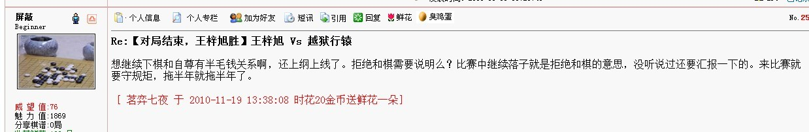
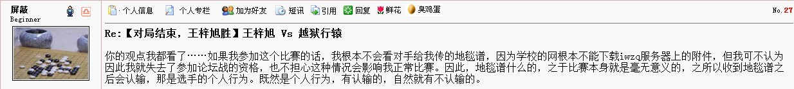
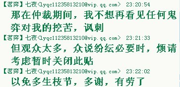
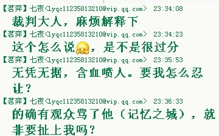
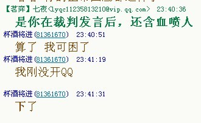
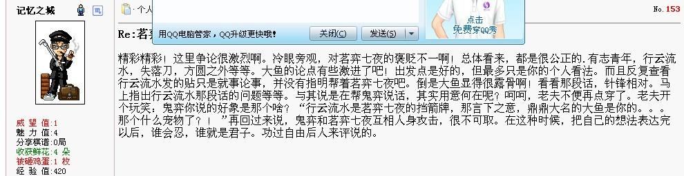

茗弈七夜 Vs 鬼弈
#1 茗弈七夜 Vs 鬼弈 作者：失落刀 发表时间：2010-11-25 23:19:42
胆小的骆驼-鬼弈-厦门小天-茗弈七夜-啊呆-蝶舞红枫［ 被感动的人 于 2010-12-17 23:28:01 时花20金币送鲜花一朵］
#2 Re:茗弈七夜 Vs 鬼弈 作者：茗弈七夜 发表时间：2010-11-28 0:34:55
=======上图对应的爱五子棋谱代码如下，以便你拆解：========
h8h9j10
======================================================疏星二打
#3 Re:茗弈七夜 Vs 鬼弈 作者：鬼弈 发表时间：2010-11-28 8:07:30
=======上图对应的爱五子棋谱代码如下，以便你拆解：========
h8h9j10i9
======================================================
#4 Re:茗弈七夜 Vs 鬼弈 作者：茗弈七夜 发表时间：2010-11-28 23:39:39
=======上图对应的爱五子棋谱代码如下，以便你拆解：========
h8h9j10i9g9a1j9
======================================================
#5 Re:茗弈七夜 Vs 鬼弈 作者：鬼弈 发表时间：2010-11-29 17:22:09
=======上图对应的爱五子棋谱代码如下，以便你拆解：========
h8h9j10i9j9j8
======================================================
#6 Re:茗弈七夜 Vs 鬼弈 作者：茗弈七夜 发表时间：2010-11-29 17:52:38
=======上图对应的爱五子棋谱代码如下，以便你拆解：========
h8h9j10i9j9j8h10
======================================================
#7 Re:茗弈七夜 Vs 鬼弈 作者：鬼弈 发表时间：2010-11-29 17:59:19
=======上图对应的爱五子棋谱代码如下，以便你拆解：========
h8h9j10i9j9j8h10g10
======================================================
#8 Re:茗弈七夜 Vs 鬼弈 作者：茗弈七夜 发表时间：2010-11-29 18:05:25
=======上图对应的爱五子棋谱代码如下，以便你拆解：========
h8h9j10i9j9j8h10g10i8
======================================================
#9 Re:茗弈七夜 Vs 鬼弈 作者：鬼弈 发表时间：2010-11-29 18:08:42
=======上图对应的爱五子棋谱代码如下，以便你拆解：========
h8h9j10i9j9j8h10g10i8k10
======================================================
#10 Re:茗弈七夜 Vs 鬼弈 作者：茗弈七夜 发表时间：2010-11-29 20:58:34
=======上图对应的爱五子棋谱代码如下，以便你拆解：========
h8h9j10i9j9j8h10g10i8k10g6
======================================================
#11 Re:茗弈七夜 Vs 鬼弈 作者：鬼弈 发表时间：2010-11-30 18:52:08
=======上图对应的爱五子棋谱代码如下，以便你拆解：========
h8h9j10i9j9j8h10g10i8k10g6h7
======================================================
#12 Re:茗弈七夜 Vs 鬼弈 作者：茗弈七夜 发表时间：2010-11-30 22:01:22
=======上图对应的爱五子棋谱代码如下，以便你拆解：========
h8h9j10i9j9j8h10g10i8k10g6h7f7
======================================================
#13 Re:茗弈七夜 Vs 鬼弈 作者：鬼弈 发表时间：2010-12-1 17:36:23
=======上图对应的爱五子棋谱代码如下，以便你拆解：========
h8h9j10i9j9j8h10g10i8k10g6h7f7e8
======================================================
#14 Re:茗弈七夜 Vs 鬼弈 作者：茗弈七夜 发表时间：2010-12-1 22:50:45
=======上图对应的爱五子棋谱代码如下，以便你拆解：========
h8h9j10i9j9j8h10g10i8k10g6h7f7e8f9
======================================================
#15 Re:茗弈七夜 Vs 鬼弈 作者：鬼弈 发表时间：2010-12-2 19:16:29
=======上图对应的爱五子棋谱代码如下，以便你拆解：========
h8h9j10i9j9j8h10g10i8k10g6h7f7e8f9f8
======================================================
#16 Re:茗弈七夜 Vs 鬼弈 作者：茗弈七夜 发表时间：2010-12-2 21:19:10
=======上图对应的爱五子棋谱代码如下，以便你拆解：========
h8h9j10i9j9j8h10g10i8k10g6h7f7e8f9f8g5
======================================================
#17 Re:茗弈七夜 Vs 鬼弈 作者：鬼弈 发表时间：2010-12-2 21:41:36
=======上图对应的爱五子棋谱代码如下，以便你拆解：========
h8h9j10i9j9j8h10g10i8k10g6h7f7e8f9f8g5g4
======================================================
#18 Re:茗弈七夜 Vs 鬼弈 作者：茗弈七夜 发表时间：2010-12-2 22:29:58
=======上图对应的爱五子棋谱代码如下，以便你拆解：========
h8h9j10i9j9j8h10g10i8k10g6h7f7e8f9f8g5g4e6
======================================================
#19 Re:茗弈七夜 Vs 鬼弈 作者：鬼弈 发表时间：2010-12-3 18:11:21
=======上图对应的爱五子棋谱代码如下，以便你拆解：========
h8h9j10i9j9j8h10g10i8k10g6h7f7e8f9f8g5g4e6d6
======================================================
#20 Re:茗弈七夜 Vs 鬼弈 作者：茗弈七夜 发表时间：2010-12-3 23:30:00
=======上图对应的爱五子棋谱代码如下，以便你拆解：========
h8h9j10i9j9j8h10g10i8k10g6h7f7e8f9f8g5g4e6d6h5
======================================================
#21 Re:茗弈七夜 Vs 鬼弈 作者：鬼弈 发表时间：2010-12-4 18:00:32
=======上图对应的爱五子棋谱代码如下，以便你拆解：========
h8h9j10i9j9j8h10g10i8k10g6h7f7e8f9f8g5g4e6d6h5i5
======================================================
#22 Re:茗弈七夜 Vs 鬼弈 作者：茗弈七夜 发表时间：2010-12-5 0:50:27
=======上图对应的爱五子棋谱代码如下，以便你拆解：========
h8h9j10i9j9j8h10g10i8k10g6h7f7e8f9f8g5g4e6d6h5i5d5
======================================================
#23 Re:茗弈七夜 Vs 鬼弈 作者：鬼弈 发表时间：2010-12-5 1:08:33
=======上图对应的爱五子棋谱代码如下，以便你拆解：========
h8h9j10i9j9j8h10g10i8k10g6h7f7e8f9f8g5g4e6d6h5i5d5c4
======================================================
#24 Re:茗弈七夜 Vs 鬼弈 作者：茗弈七夜 发表时间：2010-12-5 1:13:31
=======上图对应的爱五子棋谱代码如下，以便你拆解：========
h8h9j10i9j9j8h10g10i8k10g6h7f7e8f9f8g5g4e6d6h5i5d5c4h6
======================================================
#25 Re:茗弈七夜 Vs 鬼弈 作者：鬼弈 发表时间：2010-12-5 1:20:25
=======上图对应的爱五子棋谱代码如下，以便你拆解：========
h8h9j10i9j9j8h10g10i8k10g6h7f7e8f9f8g5g4e6d6h5i5d5c4h6f5
======================================================
#26 Re:茗弈七夜 Vs 鬼弈 作者：茗弈七夜 发表时间：2010-12-5 1:27:56
=======上图对应的爱五子棋谱代码如下，以便你拆解：========
h8h9j10i9j9j8h10g10i8k10g6h7f7e8f9f8g5g4e6d6h5i5d5c4h6f5h4
======================================================
#27 Re:茗弈七夜 Vs 鬼弈 作者：与郎共五 发表时间：2010-12-5 2:06:39
七夜晚上睡觉甜蜜蜜的。［ 茗弈七夜 于 2010-12-5 2:07:35 时花20金币送鲜花一朵］
#28 Re:茗弈七夜 Vs 鬼弈 作者：茗弈七夜 发表时间：2010-12-5 2:08:14
怎么个甜法？
［此帖子已被 茗弈七夜 在 2010-12-5 2:08:49 编辑过］
#29 Re:茗弈七夜 Vs 鬼弈 作者：鬼弈 发表时间：2010-12-5 7:53:17
=======上图对应的爱五子棋谱代码如下，以便你拆解：========
h8h9j10i9j9j8h10g10i8k10g6h7f7e8f9f8g5g4e6d6h5i5d5c4h6f5h4f6
======================================================
#30 Re:茗弈七夜 Vs 鬼弈 作者：茗弈七夜 发表时间：2010-12-5 12:06:07
=======上图对应的爱五子棋谱代码如下，以便你拆解：========
h8h9j10i9j9j8h10g10i8k10g6h7f7e8f9f8g5g4e6d6h5i5d5c4h6f5h4f6k6
======================================================
#31 Re:茗弈七夜 Vs 鬼弈 作者：鬼弈 发表时间：2010-12-5 12:20:03
=======上图对应的爱五子棋谱代码如下，以便你拆解：========
h8h9j10i9j9j8h10g10i8k10g6h7f7e8f9f8g5g4e6d6h5i5d5c4h6f5h4f6k6h3
======================================================
#32 Re:茗弈七夜 Vs 鬼弈 作者：茗弈七夜 发表时间：2010-12-5 12:38:06
=======上图对应的爱五子棋谱代码如下，以便你拆解：========
h8h9j10i9j9j8h10g10i8k10g6h7f7e8f9f8g5g4e6d6h5i5d5c4h6f5h4f6k6h3l7
======================================================
#33 Re:茗弈七夜 Vs 鬼弈 作者：鬼弈 发表时间：2010-12-5 14:57:17
=======上图对应的爱五子棋谱代码如下，以便你拆解：========
h8h9j10i9j9j8h10g10i8k10g6h7f7e8f9f8g5g4e6d6h5i5d5c4h6f5h4f6k6h3l7k8
======================================================
#34 Re:茗弈七夜 Vs 鬼弈 作者：茗弈七夜 发表时间：2010-12-6 0:55:04
=======上图对应的爱五子棋谱代码如下，以便你拆解：========
h8h9j10i9j9j8h10g10i8k10g6h7f7e8f9f8g5g4e6d6h5i5d5c4h6f5h4f6k6h3l7k8l8
======================================================
#35 Re:茗弈七夜 Vs 鬼弈 作者：鬼弈 发表时间：2010-12-6 18:34:38
=======上图对应的爱五子棋谱代码如下，以便你拆解：========
h8h9j10i9j9j8h10g10i8k10g6h7f7e8f9f8g5g4e6d6h5i5d5c4h6f5h4f6k6h3l7k8l8m7
======================================================
#36 Re:茗弈七夜 Vs 鬼弈 作者：茗弈七夜 发表时间：2010-12-7 0:28:14
=======上图对应的爱五子棋谱代码如下，以便你拆解：========
h8h9j10i9j9j8h10g10i8k10g6h7f7e8f9f8g5g4e6d6h5i5d5c4h6f5h4f6k6h3l7k8l8m7i11
======================================================鬼大师，我提和
#37 Re:茗弈七夜 Vs 鬼弈 作者：与郎共五 发表时间：2010-12-7 3:03:24
确实防得好。［此帖子已被 与郎共五 在 2010-12-7 4:33:57 编辑过］
［ 茗弈七夜 于 2010-12-7 11:41:24 时花20金币送鲜花一朵］
#38 Re:茗弈七夜 Vs 鬼弈 作者：茗弈七夜 发表时间：2010-12-7 11:42:19
的确啊，鬼大师的棋下得真是太好了，让我佩服不已啊！#39 Re:茗弈七夜 Vs 鬼弈 作者：鬼弈 发表时间：2010-12-7 18:22:33
=======上图对应的爱五子棋谱代码如下，以便你拆解：========
h8h9j10i9j9j8h10g10i8k10g6h7f7e8f9f8g5g4e6d6h5i5d5c4h6f5h4f6k6h3l7k8l8m7i11k9
======================================================
#40 Re:茗弈七夜 Vs 鬼弈 作者：鬼弈 发表时间：2010-12-7 18:24:52
还有变化 就这样做和太对不起观众［ 茗弈七夜 于 2010-12-8 1:03:33 时花20金币送鲜花一朵］
［ 踵酃 于 2010-12-8 4:43:24 时花20金币送鲜花一朵］
#41 Re:茗弈七夜 Vs 鬼弈 作者：茗弈七夜 发表时间：2010-12-8 0:35:46
=======上图对应的爱五子棋谱代码如下，以便你拆解：========
h8h9j10i9j9j8h10g10i8k10g6h7f7e8f9f8g5g4e6d6h5i5d5c4h6f6h4f5k6h3l7k8l8m7i11k9k11
======================================================
#42 Re:茗弈七夜 Vs 鬼弈 作者：茗弈七夜 发表时间：2010-12-8 1:02:57
鬼大师言之有理，小七自当听之。#43 Re:茗弈七夜 Vs 鬼弈 作者：踵酃 发表时间：2010-12-8 4:44:25
7夜不错啊，这是鬼大师第一次在论坛赛发话，人家把第一次给了你，可要加油啊。呵呵［ 茗弈七夜 于 2010-12-8 11:44:57 时花20金币送鲜花一朵］
［ 茗弈七夜 于 2010-12-8 11:45:12 时花50金币砸了你一个臭鸡蛋］
#44 Re:茗弈七夜 Vs 鬼弈 作者：茗弈七夜 发表时间：2010-12-8 11:46:17
给你鲜花，因为你的话不是事实，鬼大师的第一次是小天老师那局里的那句：呵呵，多发了一个。
给你鸡蛋，是因为这话听起来。。。
［此帖子已被 茗弈七夜 在 2010-12-8 11:49:28 编辑过］
#45 Re:茗弈七夜 Vs 鬼弈 作者：踵酃 发表时间：2010-12-8 12:14:41
 阿，原来如此，原来是跟小天那盘阿，抱歉，给错信息了。哈哈
阿，原来如此，原来是跟小天那盘阿，抱歉，给错信息了。哈哈
 阿，听起来？
阿，听起来？ 阿，你思想太邪恶了
阿，你思想太邪恶了
［此帖子已被 踵酃 在 2010-12-8 12:16:53 编辑过］
［ 茗弈七夜 于 2010-12-8 14:06:33 时花20金币送鲜花一朵］
#46 Re:茗弈七夜 Vs 鬼弈 作者：茗弈七夜 发表时间：2010-12-8 14:07:09
我没那么邪恶#47 Re:茗弈七夜 Vs 鬼弈 作者：鬼弈 发表时间：2010-12-8 20:11:17
=======上图对应的爱五子棋谱代码如下，以便你拆解：========
h8h9j10i9j9j8h10g10i8k10g6h7f7e8f9f8g5g4e6d6h5i5d5c4h6f5h4f6k6h3l7k8l8m7i11k9k11j12
======================================================
#48 Re:Re:茗弈七夜 Vs 鬼弈 作者：茗弈宽容 发表时间：2010-12-8 20:20:03
支持43楼！
#49 Re:茗弈七夜 Vs 鬼弈 作者：茗弈七夜 发表时间：2010-12-9 1:17:09
=======上图对应的爱五子棋谱代码如下，以便你拆解：========
h8h9j10i9j9j8h10g10i8k10g6h7f7e8f9f8g5g4e6d6h5i5d5c4h6f5h4f6k6h3l7k8l8m7i11k9k11j12k5
======================================================
#50 Re:茗弈七夜 Vs 鬼弈 作者：鬼弈 发表时间：2010-12-9 18:51:27
=======上图对应的爱五子棋谱代码如下，以便你拆解：========
h8h9j10i9j9j8h10g10i8k10g6h7f7e8f9f8g5g4e6d6h5i5d5c4h6f5h4f6k6h3l7k8l8m7i11k9k11j12k5j6
======================================================
#51 Re:茗弈七夜 Vs 鬼弈 作者：与郎共五 发表时间：2010-12-10 0:01:37
好像防错了。#52 Re:茗弈七夜 Vs 鬼弈 作者：茗弈七夜 发表时间：2010-12-10 2:37:04
=======上图对应的爱五子棋谱代码如下，以便你拆解：========
h8h9j10i9j9j8h10g10i8k10g6h7f7e8f9f8g5g4e6d6h5i5d5c4h6f5h4f6k6h3l7k8l8m7i11k9k11j12k5j6f4
======================================================
#53 Re:茗弈七夜 Vs 鬼弈 作者：鬼弈 发表时间：2010-12-10 17:08:14
=======上图对应的爱五子棋谱代码如下，以便你拆解：========
h8h9j10i9j9j8h10g10i8k10g6h7f7e8f9f8g5g4e6d6h5i5d5c4h6f5h4f6k6h3l7k8l8m7i11k9k11j12k5j6f4i7
======================================================
#54 Re:茗弈七夜 Vs 鬼弈 作者：茗弈七夜 发表时间：2010-12-11 0:44:02
=======上图对应的爱五子棋谱代码如下，以便你拆解：========
h8h9j10i9j9j8h10g10i8k10g6h7f7e8f9f8g5g4e6d6h5i5d5c4h6f5h4f6k6h3l7k8l8m7i11k9k11j12k5j6f4i7j11
======================================================
［此帖子已被 茗弈七夜 在 2010-12-11 0:48:04 编辑过］
#55 Re:茗弈七夜 Vs 鬼弈 作者：茗弈七夜 发表时间：2010-12-11 1:21:19
不好意思，刚才鼠标滑了下，少摆了两步棋，所以编辑了下。#56 Re:茗弈七夜 Vs 鬼弈 作者：鬼弈 发表时间：2010-12-11 17:44:29
=======上图对应的爱五子棋谱代码如下，以便你拆解：========
h8h9j10i9j9j8h10g10i8k10g6h7f7e8f9f8g5g4e6d6h5i5d5c4h6f5h4f6k6h3l7k8l8m7i11k9k11j12k5j6f4i7j11l11
======================================================
#57 Re:茗弈七夜 Vs 鬼弈 作者：茗弈七夜 发表时间：2010-12-11 23:00:21
=======上图对应的爱五子棋谱代码如下，以便你拆解：========
h8h9j10i9j9j8h10g10i8k10g6h7f7e8f9f8g5g4e6d6h5i5d5c4h6f5h4f6k6h3l7k8l8m7i11k9k11j12k5j6f4i7j11l11k4
======================================================
#58 Re:茗弈七夜 Vs 鬼弈 作者：鬼弈 发表时间：2010-12-12 8:37:24
=======上图对应的爱五子棋谱代码如下，以便你拆解：========
h8h9j10i9j9j8h10g10i8k10g6h7f7e8f9f8g5g4e6d6h5i5d5c4h6f5h4f6k6h3l7k8l8m7i11k9k11j12k5j6f4i7j11l11k4k3
======================================================
#59 Re:茗弈七夜 Vs 鬼弈 作者：茗弈七夜 发表时间：2010-12-12 12:32:11
=======上图对应的爱五子棋谱代码如下，以便你拆解：========
h8h9j10i9j9j8h10g10i8k10g6h7f7e8f9f8g5g4e6d6h5i5d5c4h6f6h4f5k6h3l7k8l8m7i11k9k11j12k5j6f4i7j11l11k4k3i3
======================================================
#60 Re:茗弈七夜 Vs 鬼弈 作者：鬼弈 发表时间：2010-12-12 13:32:20
=======上图对应的爱五子棋谱代码如下，以便你拆解：========
h8h9j10i9j9j8h10g10i8k10g6h7f7e8f9f8g5g4e6d6h5i5d5c4h6f5h4f6k6h3l7k8l8m7i11k9k11j12k5j6f4i7j11l11k4k3i3j4
======================================================
#61 Re:茗弈七夜 Vs 鬼弈 作者：茗弈七夜 发表时间：2010-12-13 0:50:42
=======上图对应的爱五子棋谱代码如下，以便你拆解：========
h8h9j10i9j9j8h10g10i8k10g6h7f7e8f9f8g5g4e6d6h5i5d5c4h6f5h4f6k6h3l7k8l8m7i11k9k11j12k5j6f4i7j11l11k4k3i3j4l5
======================================================
#62 Re:茗弈七夜 Vs 鬼弈 作者：鬼弈 发表时间：2010-12-13 18:59:55
=======上图对应的爱五子棋谱代码如下，以便你拆解：========
h8h9j10i9j9j8h10g10i8k10g6h7f7e8f9f8g5g4e6d6h5i5d5c4h6f5h4f6k6h3l7k8l8m7i11k9k11j12k5j6f4i7j11l11k4k3i3j4l5j7j5i2j1m11l10m8
======================================================
#63 Re:茗弈七夜 Vs 鬼弈 作者：茗弈七夜 发表时间：2010-12-14 1:07:03
=======上图对应的爱五子棋谱代码如下，以便你拆解：========
h8h9j10i9j9j8h10g10i8k10g6h7f7e8f9f8g5g4e6d6h5i5d5c4h6f5h4f6k6h3l7k8l8m7i11k9k11j12k5j6f4i7j11l11k4k3i3j4l5j7j5i2j1m11l10m8m10
======================================================
［ 撩闲 于 2010-12-14 11:38:53 时花20金币送鲜花一朵］
#64 Re:茗弈七夜 Vs 鬼弈 作者：鬼弈 发表时间：2010-12-14 18:40:11
=======上图对应的爱五子棋谱代码如下，以便你拆解：========
h8h9j10i9j9j8h10g10i8k10g6h7f7e8f9f8g5g4e6d6h5i5d5c4h6f5h4f6k6h3l7k8l8m7i11k9k11j12k5j6f4i7j11l11k4k3i3j4l5j7j5i2j1m11l10m8m10d8
======================================================
#65 Re:茗弈七夜 Vs 鬼弈 作者：茗弈七夜 发表时间：2010-12-14 19:15:04
=======上图对应的爱五子棋谱代码如下，以便你拆解：========
h8h9j10i9j9j8h10g10i8k10g6h7f7e8f9f8g5g4e6d6h5i5d5c4h6f5h4f6k6h3l7k8l8m7i11k9k11j12k5j6f4i7j11l11k4k3i3j4l5j7j5i2j1m11l10m8m10d8c8
======================================================
#66 Re:茗弈七夜 Vs 鬼弈 作者：鬼弈 发表时间：2010-12-14 19:26:14
=======上图对应的爱五子棋谱代码如下，以便你拆解：========
h8h9j10i9j9j8h10g10i8k10g6h7f7e8f9f8g5g4e6d6h5i5d5c4h6f5h4f6k6h3l7k8l8m7i11k9k11j12k5j6f4i7j11l11k4k3i3j4l5j7j5i2j1m11l10m8m10d8c8e7
======================================================
#67 Re:茗弈七夜 Vs 鬼弈 作者：记忆之城 发表时间：2010-12-14 21:28:28
鬼弈下棋漂亮，茗弈七夜可以投了。这次的冠军已经尘埃落定。五子痴虽然使用了小号参赛，战绩却非常辉煌。这次他小号夺冠，也必定会载入史册的。#68 Re:茗弈七夜 Vs 鬼弈 作者：茗弈七夜 发表时间：2010-12-14 23:15:55
=======上图对应的爱五子棋谱代码如下，以便你拆解：========
h8h9j10i9j9j8h10g10i8k10g6h7f7e8f9f8g5g4e6d6h5i5d5c4h6f5h4f6k6h3l7k8l8m7i11k9k11j12k5j6f4i7j11l11k4k3i3j4l5j7j5i2j1m11l10m8m10d8c8e7c5
======================================================
［ 茗弈小刀 于 2010-12-15 10:56:09 时花20金币送鲜花一朵］
#69 Re:茗弈七夜 Vs 鬼弈 作者：记忆之城 发表时间：2010-12-14 23:18:26
茗弈七夜，找到防点了？#70 Re:茗弈七夜 Vs 鬼弈 作者：茗弈小刀 发表时间：2010-12-15 10:56:46
加油夜儿~#71 Re:Re:茗弈七夜 Vs 鬼弈 作者：踵酃 发表时间：2010-12-15 11:36:12
引用：一派胡言那，哈哈
原文由 记忆之城 发表于 2010-12-14 21:28:28 :
鬼弈下棋漂亮，茗弈七夜可以投了。这次的冠军已经尘埃落定。五子痴虽然使用了小号参赛，战绩却非常辉煌。这次他小号夺冠，也必定会载入史册的。
#72 Re:茗弈七夜 Vs 鬼弈 作者：茗弈七夜 发表时间：2010-12-15 17:58:58
不是胡言#73 Re:茗弈七夜 Vs 鬼弈 作者：鬼弈 发表时间：2010-12-15 18:01:20
=======上图对应的爱五子棋谱代码如下，以便你拆解：========
h8h9j10i9j9j8h10g10i8k10g6h7f7e8f9f8g5g4e6d6h5i5d5c4h6f5h4f6k6h3l7k8l8m7i11k9k11j12k5j6f4i7j11l11k4k3i3j4l5j7j5i2j1m11l10m8m10d8c8e7c5d10
======================================================
#74 Re:茗弈七夜 Vs 鬼弈 作者：茗弈七夜 发表时间：2010-12-15 18:01:22
以师伯的才华，自然清楚不过#75 Re:茗弈七夜 Vs 鬼弈 作者：鬼弈 发表时间：2010-12-15 18:21:15
没防了吧...#76 Re:茗弈七夜 Vs 鬼弈 作者：第五象限 发表时间：2010-12-15 20:27:03
鬼弈这么多盘只和了一局 强大！#77 Re:茗弈七夜 Vs 鬼弈 作者：茗弈七夜 发表时间：2010-12-15 22:50:05
=======上图对应的爱五子棋谱代码如下，以便你拆解：========
h8h9j10i9j9j8h10g10i8k10g6h7f7e8f9f8g5g4e6d6h5i5d5c4h6f5h4f6k6h3l7k8l8m7i11k9k11j12k5j6f4i7j11l11k4k3i3j4l5j7j5i2j1m11l10m8m10d8c8e7c5d10e9
======================================================
#78 Re:茗弈七夜 Vs 鬼弈 作者：记忆之城 发表时间：2010-12-15 22:52:00
茗弈七夜，精神可嘉。#79 Re:茗弈七夜 Vs 鬼弈 作者：鬼弈 发表时间：2010-12-16 6:51:29
=======上图对应的爱五子棋谱代码如下，以便你拆解：========
h8h9j10i9j9j8h10g10i8k10g6h7f7e8f9f8g5g4e6d6h5i5d5c4h6f5h4f6k6h3l7k8l8m7i11k9k11j12k5j6f4i7j11l11k4k3i3j4l5j7j5i2j1m11l10m8m10d8c8e7c5d10e9c10
======================================================
#80 Re:茗弈七夜 Vs 鬼弈 作者：茗弈七夜 发表时间：2010-12-16 12:32:20
=======上图对应的爱五子棋谱代码如下，以便你拆解：========
h8h9j10i9j9j8h10g10i8k10g6h7f7e8f9f8g5g4e6d6h5i5d5c4h6f5h4f6k6h3l7k8l8m7i11k9k11j12k5j6f4i7j11l11k4k3i3j4l5j7j5i2j1m11l10m8m10d8c8e7c5d10e9c10l4
======================================================还有一些变化没看清，只能先缓缓了。
［ 茗弈宽容 于 2010-12-16 17:45:05 时花20金币送鲜花一朵］
#81 Re:茗弈七夜 Vs 鬼弈 作者：鬼弈 发表时间：2010-12-16 18:05:20
=======上图对应的爱五子棋谱代码如下，以便你拆解：========
h8h9j10i9j9j8h10g10i8k10g6h7f7e8f9f8g5g4e6d6h5i5d5c4h6f5h4f6k6h3l7k8l8m7i11k9k11j12k5j6f4i7j11l11k4k3i3j4l5j7j5i2j1m11l10m8m10d8c8e7c5d10e9c10l4l6
======================================================其实这些冲四解决不了左上的必杀...没有连接再冲的话 你就替我堵上吧
#82 Re:茗弈七夜 Vs 鬼弈 作者：鬼弈 发表时间：2010-12-16 18:46:04
传个地毯吧 结束这旷日持久的比赛#83 Re:茗弈七夜 Vs 鬼弈 作者：鬼弈 发表时间：2010-12-16 18:48:37
 地毯.rar
地毯.rar
#84 Re:茗弈七夜 Vs 鬼弈 作者：茗弈七夜 发表时间：2010-12-17 0:35:38
抱歉鬼大师，您的地毯肯定会被笑纳。但请恕我不能查看，原因第二轮时关于越狱那盘的讨论，有大师们都已经说明过了。这里只能说，我很佩服您的棋力。另外我需要时间思考，冲四还是您自己挡吧。为了对得起所有关心我的人，我们继续吧！没有连五，就没有输赢。［ 踵酃 于 2010-12-17 0:43:34 时花20金币送鲜花一朵］
#85 Re:茗弈七夜 Vs 鬼弈 作者：茗弈七夜 发表时间：2010-12-17 0:39:08
=======上图对应的爱五子棋谱代码如下，以便你拆解：========
h8h9j10i9j9j8h10g10i8k10g6h7f7e8f9f8g5g4e6d6h5i5d5c4h6f5h4f6k6h3l7k8l8m7i11k9k11j12k5j6f4i7j11l11k4k3i3j4l5j7j5i2j1m11l10m8m10d8c8e7c5d10e9c10l4l6j3
======================================================
#86 Re:茗弈七夜 Vs 鬼弈 作者：踵酃 发表时间：2010-12-17 0:46:01
那次的讨论，尤其屏蔽的发言，让我对此做法不再反感，仅仅是合理利用规则而已。
没准鬼弈以为已经胜了，就去国外旅游，结果超时了，又或者摆错棋子，呵呵，可不能小看论坛战哦。
［此帖子已被 踵酃 在 2010-12-17 0:47:47 编辑过］
#87 Re:茗弈七夜 Vs 鬼弈 作者：茗弈七夜 发表时间：2010-12-17 0:46:59
其实到了这里，冠军和亚军已经不是那么重要了。而我学棋一年刚满，其实当初学这个也是因为背负着身边的人的期望。如今我有幸成为一名棋手，所以我必须贯彻我自己的棋道。为了对得起所有支持我关心我的人，这盘棋我必须坚持到底！［ 踵酃 于 2010-12-17 0:51:43 时花20金币送鲜花一朵］
［ 记忆之城 于 2010-12-17 0:55:50 时花20金币送鲜花一朵］
#88 Re:茗弈七夜 Vs 鬼弈 作者：踵酃 发表时间：2010-12-17 0:49:33
看到你这发言，注册同志肯定很高兴。 呵呵#89 Re:茗弈七夜 Vs 鬼弈 作者：记忆之城 发表时间：2010-12-17 0:55:03
茗弈七夜，你这么做看来是不惧众人的目光了。很好！年轻人就应该怎么想的就怎么去做。希望你真的能淡泊名利，勤练本领。如果你一直坚持这样的信念，假以时日，你会成功的！信念是可怕的东西啊~还算好你也是性情中人。老夫再多说一句，“利用规则，是否可耻？”答案只在一念之间。真正的棋手会懂得如何去舍取。［此帖子已被 记忆之城 在 2010-12-17 0:57:42 编辑过］
#90 Re:茗弈七夜 Vs 鬼弈 作者：踵酃 发表时间：2010-12-17 1:01:36
我希望七夜坚持你的想法，利用规则，是否可耻，是留给后人思索的。历史中哪个开国帝皇不是靠阴谋暴力夺取天下的。高尚如刘备，在后人中不也有人论他是假仁意，伪君子。 奸人如曹操，后人也都认同他是伟大的军事家，战略家。
［此帖子已被 踵酃 在 2010-12-17 1:16:57 编辑过］
#91 Re:茗弈七夜 Vs 鬼弈 作者：踵酃 发表时间：2010-12-17 1:29:51
不过也好意提醒一下，这么做，要经得起别人的评价，一切都是浮云，呵呵［ 茗弈七夜 于 2010-12-17 1:59:12 时花20金币送鲜花一朵］
#92 Re:茗弈七夜 Vs 鬼弈 作者：茗弈七夜 发表时间：2010-12-17 1:58:11
我也听了很多朋友的建议。我觉得是公平的，所以我去认同。因为要把鬼大师消耗掉那么多时间，包括这盘棋，我都已经尽力了。现在我必须无怨，无悔，无愧的把这盘棋进行到底！#93 Re:茗弈七夜 Vs 鬼弈 作者：茗弈七夜 发表时间：2010-12-17 2:01:30
谢谢楼上好意！于我的确只是浮云，我所做的只是珍惜眼前人。很多时候人不是在为自己，而是在为自己最重要的人，为了不让他们失望。#94 Re:茗弈七夜 Vs 鬼弈 作者：鬼弈 发表时间：2010-12-17 8:18:49
一路哭哭咧咧进入的总决赛 我都替你害臊 还好意思在这拖延大家时间你走的棋我的地毯里有 自己查去 你这种棋品还比什么赛 输棋又丢人#95 Re:茗弈七夜 Vs 鬼弈 作者：松痕 发表时间：2010-12-17 8:22:49
记得七夜给地毯给小天看。小天说了什么的。。。。。。。#96 Re:Re:茗弈七夜 Vs 鬼弈 作者：踵酃 发表时间：2010-12-17 9:20:42
这种时候，要请我们伟大的“屏蔽”大人曾经对此做法的看法
ShowPost.asp?PageIndex=3&ThreadID=11686

请注意重点“想继续下棋和自尊有半毛钱关系啊，还上纲上线了。” 跟“来比赛就要守规矩，拖半年就拖半年了。”这两句话。
［此帖子已被 踵酃 在 2010-12-17 9:23:56 编辑过］
#97 Re:茗弈七夜 Vs 鬼弈 作者：踵酃 发表时间：2010-12-17 9:32:01
补充点资料。屏蔽大人论点看一下，我被他折服了。
话又说回来了，7夜也不过20出头的年轻人，他以五子棋手为目标，鬼弈出言侮辱七夜，让他以后面子往哪里搁阿？裁判是不是要给张黄牌警告警告阿？
［此帖子已被 踵酃 在 2010-12-17 9:33:31 编辑过］
#98 Re:茗弈七夜 Vs 鬼弈 作者：踵酃 发表时间：2010-12-17 9:41:18
 再来看看专业人士 ”顾炜老师 “对”屏蔽大人（李一）“的观点有何看法。
再来看看专业人士 ”顾炜老师 “对”屏蔽大人（李一）“的观点有何看法。
ShowPost.asp?PageIndex=3&ThreadID=11686
我相信七夜是咨询过两位专业人士的意见后，才有所觉悟的。
还有一大把资料， 不提了，自己看ShowPost.asp?ThreadID=11776
［此帖子已被 踵酃 在 2010-12-17 9:42:28 编辑过］
［此帖子已被 踵酃 在 2010-12-17 9:47:45 编辑过］
#99 Re:茗弈七夜 Vs 鬼弈 作者：鬼弈 发表时间：2010-12-17 10:46:42
=======上图对应的爱五子棋谱代码如下，以便你拆解：========
h8h9j10i9j9j8h10g10i8k10g6h7f7e8f9f8g5g4e6d6h5i5d5c4h6f5h4f6k6h3l7k8l8m7i11k9k11j12k5j6f4i7j11l11k4k3i3j4l5j7j5i2j1m11l10m8m10d8c8e7c5d10e9c10l4l6j3i4
======================================================我看看你还能走什么有用的步来？大家看看 都是没意义的乱冲 屏蔽是由于打不开地毯谱 和这局是两码事七夜前面给小天发地毯谱 被人对他发就不行？这种随便拿个终结者都可以地毯的棋还要坚持 瞎走些没用得棋 什么目的？ 你的人品，棋品我真不想多说了20多岁已经处事了也不是小孩子 你尊重别人 别人才会尊重你
#100 Re:茗弈七夜 Vs 鬼弈 作者：鬼弈 发表时间：2010-12-17 10:52:08
如果七夜这种风气不遏制 以后会有很多人效仿他 大家一起来讨论下吧 明显的输棋为什么不认输？如果有100个这样的冲四 那这盘棋 明年都下不完了#101 Re:茗弈七夜 Vs 鬼弈 作者：不再捣乱 发表时间：2010-12-17 11:12:46
不是吧？我看楼上棋虽好人品也不怎么样吧？！说话这么损，还是留点口德吧！#102 Re:茗弈七夜 Vs 鬼弈 作者：行云流水 发表时间：2010-12-17 11:13:24
谁说过明显的输棋就一定必须要认输？！
不要动辄就拿“面子、棋品”说事儿！
每个人下棋自然有其自己的思路。胜也好负也好，半毛钱都拿不到。
既然一方觉得对方是输了，那就盘上见真章。下棋不是打嘴仗！
［此帖子已被 行云流水 在 2010-12-17 11:13:50 编辑过］
#103 Re:茗弈七夜 Vs 鬼弈 作者：鬼弈 发表时间：2010-12-17 11:29:20
任何项目都会有裁决吧 对付无理取闹的人 总得有个规则限制吧 这都是不言而喻 我说过如果有100个冲四怎么办？就这么靠到明年着？裁判给个说法吧人品棋品 大家都能看到 好坏自有评价明显输棋不认输 拖着 这叫什么？用什么词来形容？#104 Re:茗弈七夜 Vs 鬼弈 作者：踵酃 发表时间：2010-12-17 11:38:25
下到明年就下到明年贝，规则如此。
你可以看注册同志参加的峡月论坛战，他每局都要让对方连五才认输，难道我们连让他被连5的权利都剥夺吗？呵呵
不过我本人是不会这样做，只要让我知道我是输得，我就会认输，这个是个人选择，但我不反对别人做到对方连5才认输，那也是他们个人的选择，除非规则加上（当裁判发现" 搅局“的情况发生，有权停止对局，在亚运会上，韩国的围棋选手就做过”搅局“的事件，当时裁判终止了对局，因为规则上有这条”当裁判发现有搅局者的时候，可以停止对局。。。。看看中国五子棋竞赛规则2009版，有这条规则吗？
#105 Re:茗弈七夜 Vs 鬼弈 作者：胆小的骆驼 发表时间：2010-12-17 11:43:29
公道自在人心，下棋本是修身养性。鬼弈大哥别再和他争了，就算对家是根据规则想拖你到时间也没什么不对的，参加这个比赛能学习到下棋的思路和做人也不错了。有句话说有赌未为输，做人下棋自己心里有数就行。人生的路很长，比赛也只不过是一个插曲罢了，但求问心无愧足矣！#106 Re:茗弈七夜 Vs 鬼弈 作者：不再捣乱 发表时间：2010-12-17 11:43:48
记得有个比赛贴，选手A上传了地毯谱，选手B还是继续下，那你怎么说？既然是比赛，在没破坏规则纪律的情况下，选手要怎么比那是他的权利！五子棋的规则当然是一方五连了才算结束！#107 Re:茗弈七夜 Vs 鬼弈 作者：踵酃 发表时间：2010-12-17 11:47:09
再说了，在时间包干制的比赛，合理利用时间这个规则，也是一种战略。 韩国围棋为什么那么强？因为他们对胜负很敏感，一切能获胜的方法都会去做。日本围棋是公认的艺术围棋，有非常高的棋理，棋德，但却在现今的国际比赛中远远落后中韩。 日本围棋礼仪传统，很值得我们敬佩的，但胜负场上，败者不会被人记住的。#108 Re:Re:茗弈七夜 Vs 鬼弈 作者：踵酃 发表时间：2010-12-17 11:52:54
引用：这里有个例外，就算一方连五，但没提出自己连5，对方又在其他地方落子，而你没注意，过了2天，对方提出你超时了，照样判你超时的输。
原文由 不再捣乱 发表于 2010-12-17 11:43:48 :
记得有个比赛贴，选手A上传了地毯谱，选手B还是继续下，那你怎么说？既然是比赛，在没破坏规则纪律的情况下，选手要怎么比那是他的权利！五子棋的规则当然是一方五连了才算结束！
#109 Re:茗弈七夜 Vs 鬼弈 作者：五子棋痴 发表时间：2010-12-17 12:08:19
看不下去了。。。。有没有一个做棋手应该具备的职业素养？明显的输棋还在那里恶意拖延时间。这盘棋的胜负对你真的那么重要吗？就算对手超时输给你，让你拿冠军了又能说明什么，说明你很强吗？
不能否认，这样的做法并没有违反规则。但有没有想过，搞这样的比赛，其主要目的是给棋手提供一个相互切磋，交流的平台，本意是好的。结果有人为了眼前的一点微不足道的利益，做出这种违背职业道德的事情，以后谁还愿意跟你交流？五子棋的圈子本来就不大，也没啥利可图，想不明白为什么有些人就是喜欢拼命做这种砸自己牌子的事情。
［此帖子已被 五子棋痴 在 2010-12-17 12:08:47 编辑过］
#110 Re:茗弈七夜 Vs 鬼弈 作者：茗弈七夜 发表时间：2010-12-17 12:13:37
鬼弈，你说话留点口德吧。你是五子痴的小号谁都知道了。五子棋痴也是你的小号吧。任何行为要值得别人去说。你既然无愧，怕别人说什么。尊称你一声前辈，但你的人品行为，大家也有目共睹了，恕我也不能恭维吧！
=======上图对应的爱五子棋谱代码如下，以便你拆解：========
h8h9j10i9j9j8h10g10i8k10g6h7f7e8f9f8g5g4e6d6h5i5d5c4h6f5h4f6k6h3l7k8l8m7i11k9k11j12k5j6f4i7j11l11k4k3i3j4l5j7j5i2j1m11l10m8m10d8c8e7c5d10e9c10l4l6j3i4m5
======================================================
［此帖子已被 茗弈七夜 在 2010-12-17 12:17:17 编辑过］
#111 Re:茗弈七夜 Vs 鬼弈 作者：鬼弈 发表时间：2010-12-17 12:20:02
七夜前面对小天发了地毯谱我是用了他的方法 都说小刀马甲多 今天开眼了 呵呵#112 Re:茗弈七夜 Vs 鬼弈 作者：茗弈七夜 发表时间：2010-12-17 12:21:34
小七再次感谢各位的评论（除了五子痴和他自己的小号）大家支持我也好（更确切的说是理解我，理解万岁~），批评我也好（以理服人，有理有据，我自然欣然接受）其次，感谢行云流水，注册，踯酃等等大师就事论事，所给出的见解！#113 Re:茗弈七夜 Vs 鬼弈 作者：五子棋痴 发表时间：2010-12-17 12:22:28
“现在我必须无怨，无悔，无愧的把这盘棋进行到底！”这种话，你也好意思说得出口。你不羞耻我都替你羞耻。还是希望做事情前先考虑清楚后果吧。还有，我不是鬼弈。我建议鬼弈，如果茗弈七夜还坚持要无怨，无悔，无愧的把这盘棋进行到底，你就干脆认输给他，满足他吧。#114 Re:茗弈七夜 Vs 鬼弈 作者：鬼弈 发表时间：2010-12-17 12:26:33
=======上图对应的爱五子棋谱代码如下，以便你拆解：========
h8h9j10i9j9j8h10g10i8k10g6h7f7e8f9f8g5g4e6d6h5i5d5c4h6f5h4f6k6h3l7k8l8m7i11k9k11j12k5j6f4i7j11l11k4k3i3j4l5j7j5i2j1m11l10m8m10d8c8e7c5d10e9c10l4l6j3i4m5n5
======================================================下个冲四在哪？ 我是五子痴怎么了 你的做法说实话 你不配参加论坛战 论坛战是英雄交流的场所 你上个局面编辑过是怎么回事？我可没同意你悔棋你继续冲吧 让大家看看你的棋。。那个什么
#115 Re:茗弈七夜 Vs 鬼弈 作者：鬼弈 发表时间：2010-12-17 12:29:59
七夜啊 顶你的其实只有一个人 都是马甲而已 会有支持你？你觉得可能吗？［此帖子已被 鬼弈 在 2010-12-17 12:32:52 编辑过］
#116 Re:茗弈七夜 Vs 鬼弈 作者：茗弈七夜 发表时间：2010-12-17 12:33:47
编辑过怎么了？我编辑的是说你的话。你可有截图？可有证明？我编辑的是什么内容网站管理者有记录吧，需要对证吗？再说，在您没有回棋前编辑也是允许的吧！好好下棋吧，不要再人身攻击了，众目睽睽呢！即使我冲完了，还有您的棋，请您也一步一步下吧。我现在郑重声明：不需要您帮我落子。#117 Re:茗弈七夜 Vs 鬼弈 作者：屏蔽 发表时间：2010-12-17 12:35:55
终于……#118 Re:茗弈七夜 Vs 鬼弈 作者：茗弈七夜 发表时间：2010-12-17 12:43:31
你现在承认你是五子痴了？呵呵你是谁已经不重要了。你一定要说我的不好，还说什么我不是英雄所为，那就稍微和你理论一下吧！第一，你说的100个冲四本身就是夸张，不切实际。同时，即使对手有100冲四，你也只能一个一个去防。难道你不防，直接认输？这个实战和网战是一样的。第二，网战的地毯谱是个人行为，这点我现在也理解了。先说实战，现在必胜谱满天飞，但实战明知必胜能走对的有多少人？同理，网战你即使地毯了，也可能有你自己走错的可能。难道你就能保证你之后每一步都不会有差错？如果对手坚持继续，你就必须继续。这是一个棋手基本的素质吧！尊重对手，认真对待自己的每一盘棋！这样的信条我一直秉承，对于鬼大师你的话，就犹未可知了吧！再有，最重要的一条：你说什么这种行为要遏制，我觉得更错。退一万步讲，如果我们之间的对局不影响任何名次，那么你上传了地毯谱，裁判可以认为我是恶意延续。但现在的情况，大家都看得见，那就不一样了。你有地毯谱又如何？不排除你自己下错或者超时的可能性。最后说超时。大家的时间都是14天，这是最公平的地方！#119 Re:茗弈七夜 Vs 鬼弈 作者：茗弈七夜 发表时间：2010-12-17 12:54:05
支持我的众位都看到了！你敢说都是马甲？我看直接对我人生攻击的是你的马甲吧！这不是重点啦。你只要在超时之前走成五连，冠军自然是你的，我也会恭喜你的。该理论的都理论过了。我看到此打住吧。接下来，还是用心看棋，一起努力吧！#120 Re:茗弈七夜 Vs 鬼弈 作者：鬼弈 发表时间：2010-12-17 13:02:41
你对别人发地毯行 别人对你发不行？什么事都得你说了算？呵呵 你看到有人对你攻击了？那是群众的呼声 不是我的马甲 管理可以查ip 顶你的恐怕也只有小刀的马甲了#121 Re:茗弈七夜 Vs 鬼弈 作者：行云流水 发表时间：2010-12-17 13:06:22
比赛中，选择认输还是继续对局，这是一个棋手的权利。
对于局面优劣的分析这是根据每个人自身水平和考虑而来的。因为是比赛，时间战术也是合理的。记得几年前，在ORC举办过一次新布局规则的比赛，我执黑和安度对局，最后再下2步就能赢了，当时的局面情况我想旁观者和安度本人都能看到，但是我的时间处于劣势，安度依靠在其他地方冲四逼迫我超时取胜。我觉得很正常，虽然有点不甘心但是很坦然。我完全理解安度当时的战术考虑，也充分理解事后安度给我的解释，他承认白棋无法防御了，但是因为看到我的的时间存在恐慌，所以要充分利用这一点取胜。
比赛就是这样，只要不违反规则，就没有必要去指责对方，说什么有棋品没棋品的废话。如果觉得自己是一个有棋品的棋手，那就更没有必要废话那么多，直接在棋盘上分出胜负就可以了。
有人说，懂得主动认输的棋手是值得尊敬的。也有人说，在不利情况下继续拼搏的棋手是值得尊敬的。这不过是站在不同角度看问题的结果而已。
事事无一成不变。有能力的，有棋品的，那就少打嘴仗，一切放在棋盘上较量。
［ 踵酃 于 2010-12-17 13:08:40 时花20金币送鲜花一朵］
［ 记忆之城 于 2010-12-17 13:23:13 时花20金币送鲜花一朵］
［ 啊呆 于 2010-12-17 17:27:58 时花20金币送鲜花一朵］
#122 Re:茗弈七夜 Vs 鬼弈 作者：记忆之城 发表时间：2010-12-17 13:19:04
行云流水是茗弈小刀的马甲？鬼弈的话越来越让老夫笑掉大牙了。关于发地毯谱的问题，第二轮时早就有了结论。一方发了地毯谱，另一方可以认可，直接认输：当然另一方也可以不认可，继续比赛。这恐怕强迫不了吧。说穿了，鬼弈担心的是自己超时吧！#123 Re:茗弈七夜 Vs 鬼弈 作者：踵酃 发表时间：2010-12-17 13:21:42
哦，鬼弈的时间用了很多了吗？谁帮忙算算，呵呵#124 Re:茗弈七夜 Vs 鬼弈 作者：记忆之城 发表时间：2010-12-17 13:22:33
老夫算过，他还有10个小时左右超时。#125 Re:茗弈七夜 Vs 鬼弈 作者：踵酃 发表时间：2010-12-17 13:25:02
还有１０个小时！！鬼弈要２４小时守在电脑旁，我猜七夜会在半夜回帖，呵呵，辛苦呢～#126 Re:茗弈七夜 Vs 鬼弈 作者：踵酃 发表时间：2010-12-17 13:27:39
２８日开始，现在是１７号，也才过２０天左右，鬼弈只剩下１０个小时了？也就是说七夜还有５天以上的时间啊．呵呵，果然可以好好利用这点．#127 Re:茗弈七夜 Vs 鬼弈 作者：胆小的骆驼 发表时间：2010-12-17 14:43:12
这个时间怎么算的啊？#128 Re:茗弈七夜 Vs 鬼弈 作者：有志青年 发表时间：2010-12-17 15:46:31
看的人很多
#129 Re:茗弈七夜 Vs 鬼弈 作者：第五象限 发表时间：2010-12-17 16:53:47
如果有像俄慢那样的自动计时系统就好了#130 Re:茗弈七夜 Vs 鬼弈 作者：啊呆 发表时间：2010-12-17 17:26:32
都是浮云~#131 Re:茗弈七夜 Vs 鬼弈 作者：方圆之外 发表时间：2010-12-17 18:51:03
这是比赛。看规则说事。。#132 Re:茗弈七夜 Vs 鬼弈 作者：游戏人间 发表时间：2010-12-17 19:50:01
首先。。这个山口规则论坛战主要是大家交流交流的，根本谈不上正式比赛的范畴，不然也不会有包括我在内的很多人主动弃权了。有时间就来比比大家一起拆拆棋，这才是主要的目的。如果是我的话看对手这么想赢可能我就直接放弃了，反正棋的内容已经下出来了，谁胜谁负一目了然都懂的。其次，用谁举例子都比用ANDO强的多，ANDO本身就是没什么棋品的人，想比之下爱沙尼亚其他的棋手都比他在棋品上强的多，而且ORC也是个网络平台而已，ANDO经常在那搞什么快棋赛。大家都是一笑了之了，根本不可能当做支持七夜这种行为的举证。就算是正式比赛，如果明显一方必胜了，而另一方用时间压力去反败为胜也不是什么值得夸耀的事情，别说五子棋只是一个小小的棋种，就算围棋，也没听说什么大型比赛中盘大龙被吃了还故意赖着下的。包括喜欢乱战的韩国棋手，他们只是在劣势情况下这么干，没有人在明知道肯定输的情况下会这么做的，因为棋是文化的一种，如果这么做就算最后很意外的取得胜利，但是这名棋手从此在棋界肯定也是混不下去的。这没有任何条例来规定，但是每一个下棋的都应该懂的。所以不知道这里为七夜说话的这些棋手的想法是怎么样的。最后建议鬼奕认输吧，你的棋已经下成功了，没必要在这种小事上和对手斤斤计较。丢人的是谁大家都懂的。。［ 有志青年 于 2010-12-18 16:33:18 时花20金币送鲜花一朵］
［ 白河愁 于 2010-12-23 3:29:16 时花20金币送鲜花一朵］
#133 Re:茗弈七夜 Vs 鬼弈 作者：游戏人间 发表时间：2010-12-17 19:56:08
1 戴晓涵 5140 ↑1 11曹 冬 1250 ↑52 贺启发 4350 ↓1 12蔡力捷 1125 → 3 艾显平 3850 ↑2 13卢 海 1080 ↓4 4 吴 镝 2175 → 14黄金贤 980 ↓1 5 杨彦希 2025 ↑3 15韦振强 930 ↑2 6 谭鑫麟 1710 → 16龚 胜 890 ↓1 7 朱建锋 1630 ↑4 17李 一 860 ↑3 8 梅 凡 1585 ↓5 18祁 观 815 → 9 黄立勤 1525 ↑1 19黄圣明 520 ↓12 10陈 靖 1400 ↑3 20李 磊 515 ↑2顺便把这个积分榜复制过来。。这20个人有哪个在比赛里已经必败还硬靠时间取胜的呢，有的话恐怕根本都没能力进入这个排行榜。棋就是棋没得让这种龌龊事污染了。#134 Re:茗弈七夜 Vs 鬼弈 作者：与郎共五 发表时间：2010-12-17 20:21:53
九十八手分胜负，五千点击论输赢。棋有妙处心里服，言无理时眼中轻。［ 屏蔽 于 2010-12-17 20:25:16 时花20金币送鲜花一朵］
［ 有志青年 于 2010-12-18 16:33:45 时花20金币送鲜花一朵］
［ 白河愁 于 2010-12-23 3:29:36 时花20金币送鲜花一朵］
#135 Re:茗弈七夜 Vs 鬼弈 作者：小道 发表时间：2010-12-17 20:37:19
今天这里真热闹啊！希望每一位朋友在看了以上对局和对话之后，都能明白一些下棋与做人的道理。#136 Re:Re:茗弈七夜 Vs 鬼弈 作者：岳麓小棋后 发表时间：2010-12-17 20:50:55
原来是师伯啊！！呵呵，嘿嘿……
其实小号参赛也无不可阿，这次比赛过后我就有打算以后用小号参加学习了呢，说白了，用小号参赛才能真如林丹所说的享受比赛呢，看来小号也是要点威望的啦……其实啊，网络论坛战说白了不就是拆棋吗？看淡胜负阿！！！是不是小号还不是一个形而上的问题？（很多小号参赛又弃权那就是另外一个问题）拆出一个旷世难题，不比一千盘胜负还流芳千古吗？
五子棋说白了，就是那“小样”，可能这里很多人会吐我，但其实你们比我都更懂的，这个圈子很难走上台面，比中国足球还难，各位的有生之年，看的到吗？五子棋的冠军奖金能到围棋的十分之一又十分之一吗？但是我们下棋不是为名利而来的，如果是，自己就会发现自己选错行了！这些和连珠接触久的人都会有体会，当然各位能继续留在这个圈子想必也各有情怀吧！
连珠是我漂亮的后花园，仅供休闲！也许某个“落霞与孤鹜齐飞”的傍晚，你一不小心踏入了，发现原来连珠也这么有意思，那我就很知足了！
另外提件无关的事：昨天深圳有位老人不小心摔倒了，结果无人敢上前相扶，然后就挂了。据说是“前有车后有辙”，南京有位法官判了一个同样的案例，一名上前搀扶的“雷锋”最后被判“罚款”了。
#137 Re:茗弈七夜 Vs 鬼弈 作者：小道 发表时间：2010-12-17 21:23:48
无意中的一次点击，竟然发现小棋后的光彩是那么的耀眼！#138 Re:茗弈七夜 Vs 鬼弈 作者：踵酃 发表时间：2010-12-17 21:41:57
昨天深圳有位老人不小心摔倒了，结果无人敢上前相扶，然后就挂了。据说是“前有车后有辙”，南京有位法官判了一个同样的案例，一名上前搀扶的“雷锋”最后被判“罚款”了.
 这种事件多了，上次就有个小学生扶起摔倒的老婆婆过马路，结果老婆婆抓着这位学生不放，硬说是这位小学生把老婆婆弄倒的，结果扎了，老婆婆告上法庭，幸亏当时过路的路人都好心要帮小学生作证。站在天平上的法官最后虽然判了小学生无过失，但已经令这位小学生，对自己的热于助人的做法产生严重怀疑。
这种事件多了，上次就有个小学生扶起摔倒的老婆婆过马路，结果老婆婆抓着这位学生不放，硬说是这位小学生把老婆婆弄倒的，结果扎了，老婆婆告上法庭，幸亏当时过路的路人都好心要帮小学生作证。站在天平上的法官最后虽然判了小学生无过失，但已经令这位小学生，对自己的热于助人的做法产生严重怀疑。
现在建议广大乐于助人的好同志，要学雷锋做好事不留名，这样对方没法告你去，是吧，呵呵。
我看到很多家长教育自己的小孩，不要看见有人摔倒就过去，能不理就不理，刚开始我也疑惑，后来也慢慢明白其中的典故。
我们在新闻上都在怪罪为什么在街上有人晕倒，广大的中国公民却没一个人上前帮忙， 反而国外的人，上前帮忙了？
这里也有个案例，老婆婆下巴士的时候，摔倒了，没人上前扶起，老婆婆赶紧大声说“是我自己摔倒的！”这时才有人赶紧上前扶起，我们不是不想帮忙，但帮人却给自己带来麻烦，我想再固执的人，多被告几次也会怀疑自己的做法是否正确。
曾经就有位固执的人， 把摔倒的老婆婆扶起，结果被告了，在上庭之前，还向记者说，“如果再有发生这样的事情，我还会帮忙的，但判决完后”这位固执的人，也可以怀疑自己了，说道“下次发生同样的事情，我想我会迟疑一下”
［此帖子已被 踵酃 在 2010-12-17 21:49:48 编辑过］
［此帖子已被 踵酃 在 2010-12-17 21:52:13 编辑过］
#139 Re:茗弈七夜 Vs 鬼弈 作者：鬼弈 发表时间：2010-12-17 22:16:49
看了场音乐剧 才到家 非常感谢 吴镝等很多大师 能关注我的对局。整理了下思绪 好好想想这个事情哈 不嫌唠叨的就听我说几句吧 七夜从参加论坛战以来 在预赛就惹出不少事端 他对待比赛的态度我不能认可。虽然论坛战是娱乐 但我们也要尊重 棋手 论坛创建人还有论坛战的等等关注者的付出吧！七夜的做法就是在拿大家不识数把我们都当成傻子了 任你耍弄？做梦吧 相信真理越辩越明！ 七夜最令我没有想到的是 在第一时间把行云流水（这是谁我不用说了吧）拿出来当挡箭牌，速度效率超级高。我就想问七夜一句 你觉得这么做合适吗？行云流水是五子棋爱好者的榜样 你让这么伟大的人物来涉足你的浑水你就是这么对待朋友的？我知道你们是老乡 抬头不见低头见 那你就更不应该让他因为你的事牵扯其中。你就这么对待朋友...为了自己利益 不考虑对朋友的影响？爱五子棋几乎所有国内五子棋高手都会关注 提醒你 第二轮的时候很多人都超时了 那怎么算？难道从头到尾都不管 就最后一轮 最后一盘的关注度最高的对局 开始考虑超时问题 这样做会让人联想到暗箱炒作 我对论坛是有感情的 我是在为论坛着想 七夜只是来论坛的过客 倒是惹出不少是非... 如果七夜的作法得到纵容 那以后会有更多的无理取闹的画面出现 人是最聪明的 呵呵 我是作为一个观众的角度来发这个帖子 大家想想吧#140 Re:茗弈七夜 Vs 鬼弈 作者：鬼弈 发表时间：2010-12-17 22:26:37
七夜喝了N杯茶水 头悬梁锥刺股 就等着后半夜点上一个 无意义的冲四 呵呵我想了想 如果这样行的话 那不用做VCF VCT 了 多做点眠三 不就行了看到要输 就熬夜乱冲四 你就有一个月时间都能给你靠死 更别说14天了 个人观点 那边大侠月论坛战 是否可以考虑 借用这种战术呢#141 Re:茗弈七夜 Vs 鬼弈 作者：蝶舞红枫 发表时间：2010-12-17 22:33:56
虽然这盘棋似乎关系到冠军归属……不过似乎奖励也仅仅是威望，其实七夜之前两轮的晋级或多或少都存在一定争议，而且客观的说运气也一直不错，既然你一直口口声声说自己是本着互相学习的目的，那目的应该完全达到了吧，那现在又干嘛在斤斤计较。。。当然如果你坚持要用时间赢这盘棋也无可厚非，你时间用的少至少说明你经常守在电脑前，对这次比赛更加重视，理应有个好结果。。。但我个人认为你这次就算拿了冠军也不能服众，为何不大度些…………大家都挺累的了，何必呢？［ 有志青年 于 2010-12-18 16:30:51 时奖励此帖[金币加 100 威望加1］
#142 Re:茗弈七夜 Vs 鬼弈 作者：踵酃 发表时间：2010-12-17 22:39:24
理论上可以，但不提倡，处于不反对，也不赞成的阶段。
论坛战时间很关键，等新规则出炉吧，呵呵，鬼弈遇到七夜，真不知道是你倒霉，还是他倒霉。
相信这盘是鬼弈大师注册爱五以来，出现的字数最多的一次哈。
#143 Re:茗弈七夜 Vs 鬼弈 作者：失落刀 发表时间：2010-12-17 22:39:34
第一：论坛战主要功能是拆棋。
第二：期间个人的各种表现大家都能看到。
第三：大家智商也差不多，千万不能做没品的事。
大家论坛战不就为了让自己和对手和大家了解到更多的未知局面吗？
一个人拆棋无趣，就忽悠大家一起拆，也是为了繁荣连珠研究呀。
［此帖子已被 失落刀 在 2010-12-17 22:42:25 编辑过］
#144 Re:茗弈七夜 Vs 鬼弈 作者：踵酃 发表时间：2010-12-17 22:57:47
相信七夜现在的压力一定很大，该坚持到底呢，还是被教训了之后投呢？两样的结果都不会好。
我希望大家能对七夜宽容点，他这么做是一定的觉悟的，如果你仔细看，你会发现，他之前曾经对此做法咨询过各方的意见， 在听取各方比较有权威人士的看法后，才会使用这个战术。（当时讨论的时候，几乎没有反对这做法）
这个就跟楼上提到过的助人，反而被告的事件同一个道理，他以为是帮人，结果被告“罚款”（例子的重点，自己想想看，提示：不是直接的，但间接的）
我想七夜唯一漏算的是平常沉默的鬼弈出言的攻击力那么强悍。
［ 茗弈七夜 于 2010-12-18 0:52:13 时花50金币砸了你一个臭鸡蛋］
#145 Re:茗弈七夜 Vs 鬼弈 作者：鬼弈 发表时间：2010-12-17 23:05:04
裁判第三点 表示认同 呵呵#146 Re:茗弈七夜 Vs 鬼弈 作者：鬼弈 发表时间：2010-12-17 23:29:24
既然有争议 我请求叫停了 这不过分吧 等裁判研究后 再做下一步打算任何规则都要有个“度” 他这种做法就是在挑战度 他已经冲了3个没意义的四了。还都是后半夜下的的 服了you 这样下去 我就是还剩半个月不都得被他拖死#147 Re:茗弈七夜 Vs 鬼弈 作者：茗弈七夜 发表时间：2010-12-18 0:39:13
鬼弈，你似乎已经把我人身攻击得够厉害的了！大鱼老师是前辈，小棋后何许人我心里也清楚。他们说话很公正，我能接受。但你呢？现在你说我把行云流水拿出来做挡箭牌，这句话什么意思！！！请你不要颠倒是非，含血喷人！你还有一点前辈的样子吗？看看你自己的丑态吧！挖苦？讽刺？你以为比文笔我会输给你？#148 Re:茗弈七夜 Vs 鬼弈 作者：茗弈七夜 发表时间：2010-12-18 0:45:11
既然大家问了，我也就不隐瞒了。我之前已经说过，我这次不是为了自己做到这种地步的。我给过别人承诺，要努力夺冠，所以我必须坚持下去！其次，再有一个问题。14天的时间对双方都是平等的。我觉的很公平。这根本不是耍不耍赖的问题，也请不要再拿棋品来说事。只是我的个人行为，根据规则，仅此而已。如果因此影响到裁判和众位，我在此致歉！我再次声明，这只是我和鬼弈之间的争论。君子坦荡荡，鬼弈你含血喷人，说我什么拿行云流水当挡箭牌。就你这句话，我就要和你争到底！什么叫挡箭牌？行云流水是什么人？和他在一起，他就是君子，你就是小人。也不自己照照镜子。#149 Re:茗弈七夜 Vs 鬼弈 作者：茗弈七夜 发表时间：2010-12-18 0:48:18
我话到这里为止，我不想和你再打口水仗。你要是一定不肯罢休，那我只好奉陪到底！
=======上图对应的爱五子棋谱代码如下，以便你拆解：========
h8h9j10i9j9j8h10g10i8k10g6h7f7e8f9f8g5g4e6d6h5i5d5c4h6f5h4f6k6h3l7k8l8m7i11k9k11j12k5j6f4i7j11l11k4k3i3j4l5j7j5i2j1m11l10m8m10d8c8e7c5d10e9c10l4l6j3i4m5n5j2
======================================================
［此帖子已被 茗弈七夜 在 2010-12-18 0:50:33 编辑过］
#150 Re:茗弈七夜 Vs 鬼弈 作者：茗弈七夜 发表时间：2010-12-18 0:54:44
我在越狱那个帖子里表的什么态度很明确了吧！我当时也是反对拖着的。是规则允许，我才会选择这么做的。我在和鬼弈下这盘棋之前，可能会料到会有这样的局面发生？的确在决定这么做之前，我已经有了觉悟了！对自己最重要人的承诺和别人的闲言碎语比起来哪个重要，我已经得到答案了！#151 Re:茗弈七夜 Vs 鬼弈 作者：茗弈七夜 发表时间：2010-12-18 0:56:30
鬼弈叫停，我不会答应。不是我态度强硬。我再次声明，我对裁判和观众们没有一点意见。你们支持我也好，指责我也罢，我都接受。这只是我和鬼弈之间的对局。#152 Re:茗弈七夜 Vs 鬼弈 作者：踵酃 发表时间：2010-12-18 1:01:31
我又被七夜扔鸡蛋了，我所有的鸡蛋都是七夜送的 呵呵，
其实你扔我鸡蛋的那个回帖是想表达：你会合理利用规则是因为大家曾经讨论过这么做的合理性，当时大家的论点都是基本可以接受的。
#153 Re:茗弈七夜 Vs 鬼弈 作者：记忆之城 发表时间：2010-12-18 1:07:33
精彩精彩！这里争论很激烈啊。冷眼旁观，对茗弈七夜的褒贬不一啊！总体看来，都是很公正的.有志青年，行云流水，失落刀，方圆之外等等。大鱼的论点有些激进了吧！出发点是好的，但最多只是你的个人看法。而且反复查看行云流水发的贴只是就事论事，并没有指明帮着茗弈七夜吧。倒是大鱼显得很露骨啊！看看那段话，针锋相对。马上指出行云流水那段话的问题等等。与其说是在帮鬼弈说话，其实用意何在呢？呵呵，老夫不便再点穿了。老夫开个玩笑：鬼弈你说的好象是那个啥？“行云流水是茗弈七夜的挡箭牌，那言下之意，鼎鼎大名的大鱼是你的。。。那个什么宠物了？！”再回过来说，鬼弈和茗弈七夜互相人身攻击，很不可取。在这种时候，把自己的想法表达完以后，谁会忍，谁就是君子。功过自由后人来评说的。#154 Re:茗弈七夜 Vs 鬼弈 作者：踵酃 发表时间：2010-12-18 1:10:11
。。。［此帖子已被 踵酃 在 2010-12-18 1:37:25 编辑过］
#155 Re:茗弈七夜 Vs 鬼弈 作者：记忆之城 发表时间：2010-12-18 1:10:49
老夫再来一句：老夫之前发帖，被行云流水制止。老夫觉得真正的君子是在这种时候像行云流水那样考虑大局，为论坛着想，想方设法去平息风波。而不是在旁边煽风点火，惟恐天下不乱~#156 Re:茗弈七夜 Vs 鬼弈 作者：快乐天羽 发表时间：2010-12-18 1:38:44
利用规则，无可厚非。#157 Re:茗弈七夜 Vs 鬼弈 作者：哈根小魔 发表时间：2010-12-18 1:54:31
[size=20px]比赛时有游戏规则的，规则之下裁判说了算。若谁觉得胜之不武，大可在其他比赛中继续一争高下嘛，机会多多，大家都加油吧~~每个人都知道，不是输了一局就非高手了，同样，不是赢了一局就可以独霸天下的，呵呵~~#158 Re:茗弈七夜 Vs 鬼弈 作者：鬼弈 发表时间：2010-12-18 8:20:45
=======上图对应的爱五子棋谱代码如下，以便你拆解：========
h8h9j10i9j9j8h10g10i8k10g6h7f7e8f9f8g5g4e6d6h5i5d5c4h6f5h4f6k6h3l7k8l8m7i11k9k11j12k5j6f4i7j11l11k4k3i3j4l5j7j5i2j1m11l10m8m10d8c8e7c5d10e9c10l4l6j3i4m5n5j2k1
====================================================== 我叫停和你有关系？你以为你是谁 裁判会听你的？大鱼老师是打抱不平 而你是第一时间把行云流水推到最前线 你现在又把祸水网大鱼身上引 你真是太那个了。七夜4连冲了(毫无意义的，而且是在夜深人间，母鸡都去睡觉的夜晚 你却火眼晶晶盯着棋盘 哈哈）合理利用规则要有个度 铲球不犯规 你把人铲死犯规不？那个记忆之城 你说话别太那个 你是小刀马甲 我就不多说了 你别挑拨国内五子棋界的关系 我郑重警告你！各位老师来这里都是就棋论棋。
#159 Re:茗弈七夜 Vs 鬼弈 作者：鬼弈 发表时间：2010-12-18 8:31:31
更有意思的是 我叫停 请求仲裁 七夜不让 哈哈你懂规则不？不要不懂装懂好不 裁判听你的？ 我前面已经叫停了 请求仲裁 ！ 对了 暂封七夜个封号吧 就叫夜4冲 以后可能还有夜5冲....哈哈#160 Re:茗弈七夜 Vs 鬼弈 作者：失落刀 发表时间：2010-12-18 10:27:00
鉴于比赛出现较大争议，裁判有义务维护比赛秩序。
决定：本局对局暂封棋，封棋期间不计入任何一方对局时间。裁判会在谨慎研究后宣布解除封棋（均在本贴跟帖形式），
并给出以下结果的一种：
①A胜B败；
②和棋；
③A败B胜；
④双负；
⑤继续比赛；
⑥继续比赛，某方违例一次（或警告一次）；
⑦继续比赛，某方加时**（或某方减时**）；
⑧其他。
同时给出具体解释。
无论做出什么结果，都将作为最终结果，过后不受理申诉。
［此帖子已被 失落刀 在 2010-12-18 10:30:07 编辑过］
#161 Re:茗弈七夜 Vs 鬼弈 作者：鬼弈 发表时间：2010-12-18 10:36:10
群众的眼睛是雪亮的 希望组委会能给出个合理 公平 公正的 决定！ 谢谢了#162 Re:茗弈七夜 Vs 鬼弈 作者：茗弈七夜 发表时间：2010-12-18 11:27:51
你还要回帖？那我也说说吧！裁判加入，我绝对支持！但请裁判注意下，这个争议其实是在规则允许的范围内引发的！这个问题，早在第二轮已经得到裁判和大众的认可。因此必须再提下！利用现有的规则，为何要受到指责？赛前定下的规则，赛中是否可以修改？请裁判大人们三思。另外，感谢有志老师，行云老师，天羽老师，屏蔽老师，失落刀裁判大人等等。感谢大家的关注，群众的眼睛的确是雪亮的！再次谢谢大家！#163 Re:茗弈七夜 Vs 鬼弈 作者：茗弈七夜 发表时间：2010-12-18 11:31:17
裁判大人们辛苦，小七在此静候最后得出的公平，公正，能让人信服的决定！有劳了！#164 Re:茗弈七夜 Vs 鬼弈 作者：鬼弈 发表时间：2010-12-18 12:11:31
夜四冲说 感谢有志老师，行云老师，天羽老师，屏蔽老师，失落刀裁判大人等等。你什么意思 还想让更多的人涉足你的浑水？安静点吧 没人会站到你那边的 因为你现在所扮演的角色 是在现实中的话就是混不下去的角色 呵呵你一开始说过不允许我仲裁（心虚的表现） 哈哈 现在仲裁出来了 你又说支持 我对你真的是不知说什么好了 嘴皮子玩一次有人相信你 总这样还有人会占同你？#165 Re:茗弈七夜 Vs 鬼弈 作者：winf99 发表时间：2010-12-18 12:51:27
在决赛：茗弈七夜 Vs 啊呆 ，
七夜提和，阿呆老师说再下几手看看。
这时，七夜在47楼吟了两句诗：浮云本是身外物 不关方寸也风流 ！
几天来，我总在思考：为什么七夜自己却不这么做呢？
#166 Re:茗弈七夜 Vs 鬼弈 作者：撩闲 发表时间：2010-12-18 13:53:12
鬼弈你这盘能赢吗？我没看出哪里能杀啊...不好意识，水平有限。你杀出来我看看嘛#167 Re:茗弈七夜 Vs 鬼弈 作者：鬼弈 发表时间：2010-12-18 14:21:24
左上角白必胜 黑防不住 属于简单杀 要是目算水平不够 你可以去找夜四冲要个连珠终结者（就是他给小天做地毯的那个软件）黑石也能搞定 连珠妙手6.8也没问题#168 Re:茗弈七夜 Vs 鬼弈 作者：有志青年 发表时间：2010-12-18 16:56:59
比赛，是严肃的事情，看重结果是正常的态度！我们需要认真对待！
较真，不是一种健康的生活态度！
我记得，那是在xx做裁判吧，有一个小伙子很“较真”，1、力图拍死对方，2、对方的任何动作都可能会是一种干扰思考，策略这个东西本身是中性的，没有好坏，但心态却有好坏，不是吗？从那以后的几次比赛中，据说，该选手均属于重点关注对象，当然那名选手最终没有获胜，如果获胜，我想今后也是独孤求败了吧。
#169 Re:Re:茗弈七夜 Vs 鬼弈 作者：有志青年 发表时间：2010-12-18 17:00:39
引用：
原文由 茗弈七夜 发表于 2010-12-18 0:45:11 :
既然大家问了，我也就不隐瞒了。我之前已经说过，我这次不是为了自己做到这种地步的。我给过别人承诺，要努力夺冠，所以我必须坚持下去！其次，再有一个问题。14天的时间对双方都是平等的。我觉的很公平。这根本不是耍不耍赖的问题，也请不要再拿棋品来说事。只是我的个人行为，根据规则，仅此而已。如果因此影响到裁判和众位，我在此致歉！我再次声明，这只是我和鬼弈之间的争论。君子坦荡荡，鬼弈你含血喷人，说我什么拿行云流水当挡箭牌。就你这句话，我就要和你争到底！什么叫挡箭牌？行云流水是什么人？和他在一起，他就是君子，你就是小人。也不自己照照镜子。
看来这一盘是为他人而战，所以必须坚持，窃窃的猜想一下，那个别人应该是“她”
#170 Re:茗弈七夜 Vs 鬼弈 作者：鬼弈 发表时间：2010-12-18 17:47:18
说真的 夜四冲说话我从来不听 根本不靠谱 用嘴忽悠人是他强项说我血口喷人 我最近看到的怎么都是他骂我的话...我最近心情好 不和你吵如果我没说错 这次裁决 是有论坛战以来 第一次 过去没有先例 这次裁决的公正与否 直接影响以后大家对论坛战的信任度 那边大峡月论坛战也在进行 会互相影响。更重要的一点 你说你走的棋合乎规则 我早就跟你说过 合理的规则都要有个“度” 铲球不犯规 铲死人还不犯规？你已经在大半夜冲了四个没意义的四了 有再一再二 还有再三再四？如果继续让你冲下去 你不觉得可笑吗？奉劝七夜 投了吧 年轻人拿得起放得下 我们还是会欣赏你的。#171 Re:茗弈七夜 Vs 鬼弈 作者：第五象限 发表时间：2010-12-18 18:46:35
建议以后论坛战时0点至早8点的时间排除在计时范围内，不采用包干制，每方超过14天后12小时1手之类的规则决赛时适当增加双方时间［ 有志青年 于 2010-12-19 9:05:23 时花20金币送鲜花一朵］
#172 Re:Re:茗弈七夜 Vs 鬼弈 作者：岳麓小棋后 发表时间：2010-12-18 18:48:41
提一个解决方案。
下次比赛“放地毯谱”可以这么去理解：一方放地毯谱意味着他已经公布他所有的走法，往后落子均必须按谱落子，且此后落子时间不再计入对局时间就行了，直到谱结束再重新计时；如果中途不按谱落子，放谱者败。
之前不是有一个帖子提到放地毯谱的问题吗，记得好象有人提出选手可以挑选其中任意一个局面继续往下落子，这个方案可以采纳的啊，当然那位选手可能自己不下载下来学习，非要连到五才算，这里可以补个如上的特殊情况默认处理方法。
这个方案仅限“下次”使用，本次的话还是按既行规则行事吧。
（1）七夜不应该再受到任何谴责！（事实如此，又不犯法又不犯之前订下的“规”，就算“夜四冲”，褒他的人也许看到的是他的不轻易放弃、努力争取的身影，贬他的人也许就只能看到他的滑头和无理。但这事就说到底，法规和道德都无权谴责他的。个人看法。）
（2）再提一件无关的事，前几年看了一部《围棋少年》的动画，里面的方圣就是用拖时填空子的方法搞“死”林心诚的，里面是怎么解决这个问题的，以及第二部里方圣的反思还债各位又是怎么看的呢？呵呵
［ 冥王哈迪斯 于 2010-12-23 20:43:13 时花20金币送鲜花一朵］
#173 Re:茗弈七夜 Vs 鬼弈 作者：游戏人间 发表时间：2010-12-18 19:19:59
到底是棋德重要还是规则重要，每个人心中都有自己的想法~#174 Re:茗弈七夜 Vs 鬼弈 作者：蝶舞红枫 发表时间：2010-12-18 19:25:13
现在这个论坛赛计时问题比较大啊。个人觉得首先应该让对局双方对自己所剩的时间有一个直观的了解，尤其是总天数还剩多少，对局者计算起来比较麻烦，容易造成超时，不知能否像俄罗斯慢棋网那样，或者到一定时间由裁判进行提醒……这盘棋七夜的做法原则上的确没有错误，但肯定也不能提倡，如果这盘棋最终结果是鬼弈超时判负，并且结果有效。那对同时进行的大峡月论坛赛肯定也有不好的影响。建议裁判即使不能改变这盘棋的结果，也应尽快在大峡月论坛赛比赛说明。支持小棋后关于地毯谱的处理方法，对手不下载裁判可以下载帮助验证，发谱者在节约自己时间的同时，也承担着谱有BUG的风险，貌似比较合理……#175 Re:茗弈七夜 Vs 鬼弈 作者：第五象限 发表时间：2010-12-18 19:25:50
额 怎么让我想起以前学政治时关于道德与法律的讨论#176 Re:茗弈七夜 Vs 鬼弈 作者：鬼弈 发表时间：2010-12-18 19:26:10
不要以为他这种做法不是违规了合理的规则都要有个“度”违反了这个“度”（也就是打扰了比赛顺利进行）那就是违规了比如他在已经无力回天的情况下 用一些乱冲四来消耗你的时间 你认为你14天的时间能够用吗？何况比赛已经进入尾声 如果都这样 那比赛还能顺利进行吗？难道五子棋比赛比的是谁在线时间长？既然有再一再二 还可再三再四？#177 Re:茗弈七夜 Vs 鬼弈 作者：鬼弈 发表时间：2010-12-18 19:31:07
前提是比赛限制了 14天时间 他用这种方法 可以让你14天的规则限制成为泡影 这就是违反了规则初衷！已经超过了 这个“度”的限制很明显是违规了 。#178 Re:茗弈七夜 Vs 鬼弈 作者：鬼弈 发表时间：2010-12-18 19:38:46
因为很多规则条款 不可能都一一列举出来 所以才有了裁判仲裁这个说法 裁判可以根据目前情况判定是否违规 是否违背规则初衷 这都是很正常的。#179 Re:茗弈七夜 Vs 鬼弈 作者：哈根小魔 发表时间：2010-12-18 21:33:30
千江有水千江月。。。#180 Re:茗弈七夜 Vs 鬼弈 作者：茗弈七夜 发表时间：2010-12-18 22:26:48
千江有水千江月，万里无云万里天。
［此帖子已被 茗弈七夜 在 2010-12-19 0:20:44 编辑过］
#181 Re:茗弈七夜 Vs 鬼弈 作者：茗弈七夜 发表时间：2010-12-18 22:28:11
现在是在裁判仲裁，我从来就没在意过你的言论。还有你一口一个夜四冲，要我也给你起个绰号吗？#182 Re:茗弈七夜 Vs 鬼弈 作者：茗弈七夜 发表时间：2010-12-18 22:31:18
你在强调什么“度”呢？我觉得小棋后说得很公平。蝶舞大师也言之有理。在裁判封棋阶段，你还这样对我恶语相向，我是否要追究呢？#183 Re:Re:茗弈七夜 Vs 鬼弈 作者：记忆之城 发表时间：2010-12-18 22:35:34
引用：
原文由 游戏人间 发表于 2010-12-18 19:19:59 :
到底是棋德重要还是规则重要，每个人心中都有自己的想法~
大鱼，你的话未免有乱扣帽子的嫌疑吧！
“利用规则，是否可耻？”这个问题老夫最早提出的。
现在茗弈七夜的所作所为，在规则允许的范围之内。
这和棋品，棋德沾不上关系。
#184 Re:茗弈七夜 Vs 鬼弈 作者：记忆之城 发表时间：2010-12-18 22:39:27
老夫认为，规则下届开始可以修改。现在要思考的是如何让论坛赛更好地进步，发展。茗弈七夜的做法不能提倡。但在这届比赛中，是在合理利用规则，凭什么受到谴责？这一点上，老夫和岳麓小棋后持相同看法。#185 Re:茗弈七夜 Vs 鬼弈 作者：鬼弈 发表时间：2010-12-18 22:41:15
你是坚持你的做法了 表明态度了 我早就跟你说 你不要拉别人下水 现在没人愿意和你沾上边小棋后是同情和可怜你你都听不出来？如果我没记错 蝶舞大师 早就劝过你认输了 你去查查吧你最近侮辱我的地方很多 我先记下来。夜四冲也没侮辱你啊 不就是晚上冲了四个四呗~怎么你自己都觉得丢人了？#186 Re:Re:茗弈七夜 Vs 鬼弈 作者：记忆之城 发表时间：2010-12-18 22:49:33
引用：
原文由 鬼弈 发表于 2010-12-18 17:47:18 :
说真的 夜四冲说话我从来不听 根本不靠谱 用嘴忽悠人是他强项说我血口喷人 我最近看到的怎么都是他骂我的话...我最近心情好 不和你吵如果我没说错 这次裁决 是有论坛战以来 第一次 过去没有先例 这次裁决的公正与否 直接影响以后大家对论坛战的信任度 那边大峡月论坛战也在进行 会互相影响。更重要的一点 你说你走的棋合乎规则 我早就跟你说过 合理的规则都要有个“度” 铲球不犯规 铲死人还不犯规？你已经在大半夜冲了四个没意义的四了 有再一再二 还有再三再四？如果继续让你冲下去 你不觉得可笑吗？奉劝七夜 投了吧 年轻人拿得起放得下 我们还是会欣赏你的。鬼弈的话，很有意思。以前辈自举，任何人都能看出他是在对初出茅庐的茗弈七夜施加压力。
让人忍俊不禁地是：他一直在强调的“度”，是裁判和大众在第二轮公认的规则！
而鬼弈现在却妄图让裁判临时改变规则？这种行为挑战的是不是裁判的权威呢？
再看他那一副“兴师问罪”的气势，从何而来？
老夫不便点穿了，呵呵。
#187 Re:Re:茗弈七夜 Vs 鬼弈 作者：记忆之城 发表时间：2010-12-18 22:51:51
引用：
原文由 鬼弈 发表于 2010-12-18 22:41:15 :
你是坚持你的做法了 表明态度了 我早就跟你说 你不要拉别人下水 现在没人愿意和你沾上边小棋后是同情和可怜你你都听不出来？如果我没记错 蝶舞大师 早就劝过你认输了 你去查查吧你最近侮辱我的地方很多 我先记下来。夜四冲也没侮辱你啊 不就是晚上冲了四个四呗~怎么你自己都觉得丢人了？鬼弈喜欢乱咬人的习惯要改改了，不可取。
#188 Re:茗弈七夜 Vs 鬼弈 作者：鬼弈 发表时间：2010-12-18 22:51:58
规则是不可能一一列举出来的 要不然任何项目的规则都可以写本字典了 还要仲裁干什么？所以有一些疑难问题 就要请教仲裁了 记忆之城对大鱼老师这么不敬 唉 我知道什么叫物以类聚 你和夜四冲 好搭档刀#189 Re:茗弈七夜 Vs 鬼弈 作者：记忆之城 发表时间：2010-12-18 22:53:37
鬼乱咬，老夫觉得你和大鱼很默契嘛~#190 Re:茗弈七夜 Vs 鬼弈 作者：鬼弈 发表时间：2010-12-18 22:54:42
［此帖子已被 鬼弈 在 2010-12-18 23:16:51 编辑过］
#191 Re:茗弈七夜 Vs 鬼弈 作者：记忆之城 发表时间：2010-12-18 22:57:04
鬼乱咬又出新节目了，精彩精彩！又咬出个茗弈小刀，真是厉害啊~［ 失落刀 于 2010-12-18 23:15:51 时惩罚此帖，发帖者[金币减100 威望减1］
［ 茗弈七夜 于 2010-12-18 23:27:08 时花50金币砸了你一个臭鸡蛋］
［此帖子已被 记忆之城 在 2010-12-19 0:23:05 编辑过］
#192 Re:茗弈七夜 Vs 鬼弈 作者：鬼弈 发表时间：2010-12-18 22:58:27
开始骂了？哈哈 夜四冲就和这样的人在一起 才修的今天的真本事啊！#193 Re:茗弈七夜 Vs 鬼弈 作者：记忆之城 发表时间：2010-12-18 23:04:36
鬼乱咬，你原来叫五子痴多好。你看看你偏偏不知足，现在这下你可出大名了。茗弈七夜？你以为老夫是在帮他？老夫和他素未平生。老夫看不惯的是，有些人倚老卖老，趁机打压年轻人。#194 Re:茗弈七夜 Vs 鬼弈 作者：winf99 发表时间：2010-12-18 23:07:25
记忆之城！开始看您回的帖子感觉是德高望重前辈。
但现在怎么也开骂了呢？唉！
特别是您发的那个：最后一盘的较量 的帖子
连行云流水老师都说：这个帖子干嘛？！没事儿找事儿？？！！
来说是非者，必是是非人啊！果然不假
#195 Re:茗弈七夜 Vs 鬼弈 作者：鬼弈 发表时间：2010-12-18 23:08:44
每次夜四冲在的时候 你都在 他发帖 你跟帖 这种默契 是素未平生？哈哈 你比他还能忽悠你们互相学习吧 我睡觉了#196 Re:茗弈七夜 Vs 鬼弈 作者：记忆之城 发表时间：2010-12-18 23:12:49
老夫骂都骂了，老夫就是臭脾气。老夫不敢自居前辈，最多痴长几岁罢了。老夫是一时气愤，并非搬弄是非。老夫的观点很明确：不要借机打压年轻人。老夫不会和他对骂下去的。#197 Re:茗弈七夜 Vs 鬼弈 作者：鬼弈 发表时间：2010-12-18 23:15:34
你不是臭脾气 你是臭气熏天#198 Re:茗弈七夜 Vs 鬼弈 作者：失落刀 发表时间：2010-12-18 23:16:40
封棋的帖子里面传来了谩骂声。。。
请方便的人转告一下，
大家注意克制言辞，
勿谓言之不预也。
裁判组和邀请的几位连珠界老师，
正在讨论此事，
我们大家都不希望看到节外生枝的事情出现。
［此帖子已被 失落刀 在 2010-12-18 23:17:16 编辑过］
#199 Re:茗弈七夜 Vs 鬼弈 作者：茗弈七夜 发表时间：2010-12-18 23:17:01
裁判在群里发话了，请停止这无谓的争论吧。记忆之城前辈，不管你出于何种目的，我还是谢谢您！但请不要在把水搅混了！！！耐心等待仲裁的结果就可以了。#200 Re:茗弈七夜 Vs 鬼弈 作者：鬼弈 发表时间：2010-12-18 23:19:51
物以类聚 呵呵 这俩人经常配合发帖 臭味都熏到阿波罗了［ 失落刀 于 2010-12-18 23:20:47 时花50金币砸了你一个臭鸡蛋］
#201 Re:Re:茗弈七夜 Vs 鬼弈 作者：茗弈七夜 发表时间：2010-12-18 23:26:25
引用：
原文由 鬼弈 发表于 2010-12-18 23:19:51 :
物以类聚 呵呵 这俩人经常配合发帖 臭味都熏到阿波罗了［ 失落刀 于 2010-12-18 23:20:47 时花50金币砸了你一个臭鸡蛋］

烦请众位尊重裁判们的仲裁过程，不要再起风波。拜托了！
#202 Re:茗弈七夜 Vs 鬼弈 作者：鬼弈 发表时间：2010-12-18 23:32:35
哈哈 又在演戏 还拉个搭档 这回不上你当了 公道自然在 多行无益必自毙 睡觉去#203 Re:Re:茗弈七夜 Vs 鬼弈 作者：茗弈七夜 发表时间：2010-12-18 23:41:16
引用：
原文由 鬼弈 发表于 2010-12-18 23:32:35 :
哈哈 又在演戏 还拉个搭档 这回不上你当了 公道自然在 多行无益必自毙 睡觉去
［此帖子已被 茗弈七夜 在 2010-12-18 23:42:19 编辑过］
#204 Re:茗弈七夜 Vs 鬼弈 作者：茗弈七夜 发表时间：2010-12-18 23:44:03
你无凭无据，含血喷人。观众骂你，我已经出言制止。你还要我如何？我能管得住悠悠之口？

这是你的理由，我不便多说什么了。我忍了，请耐心等待裁判仲裁的结果吧。
［此帖子已被 茗弈七夜 在 2010-12-18 23:44:27 编辑过］
［此帖子已被 茗弈七夜 在 2010-12-18 23:45:38 编辑过］
#205 Re:Re:茗弈七夜 Vs 鬼弈 作者：记忆之城 发表时间：2010-12-19 0:27:13
引用：
原文由 鬼弈 发表于 2010-12-18 22:54:42 :［此帖子已被 鬼弈 在 2010-12-18 23:16:51 编辑过］
鬼弈在编辑帖子吗？这个帖子的原话是说“茗弈小刀就在附近，大家来猜她是谁。猜对奖励一壶葱。”含沙射影，是在侮辱茗弈小刀把！很多人都看到了！
不过老夫也不想看到这个帖子里有漫骂。老夫也就给你起个绰号，然后效仿你编辑下帖子。（老夫本来骂你是狗，实在不雅~老夫这里给你陪个不是。）
另人欣喜的是，老夫看见茗弈七夜也把之前因为气极说你的一句“鬼弈趁我一天不在，乱扑腾”的话也编辑掉了。（这个帖子里最初两人情绪都很激动，互相言语攻击。但在裁判宣布暂时封棋之后，鬼弈说话什么语气？态度？如何打压，漫骂茗弈七夜，众位都看到了。茗弈七夜的表现众位也都看到了~）
老夫要强调的是：论坛的文明环境需要每个人共同去维护。编辑帖子的现象出现是件好事！
［此帖子已被 记忆之城 在 2010-12-19 0:40:00 编辑过］
#206 Re:茗弈七夜 Vs 鬼弈 作者：啊呆 发表时间：2010-12-19 1:40:34
阿弥陀佛～ 善哉善哉~［ 茗弈七夜 于 2010-12-19 7:25:35 时花20金币送鲜花一朵］
#207 Re:茗弈七夜 Vs 鬼弈 作者：鬼弈 发表时间：2010-12-19 8:06:57
大家注意到没ShowPost.asp?PageIndex=13&ThreadID=11821 七夜记忆之城同时出现是在早上ShowPost.asp?PageIndex=16&ThreadID=11821 七夜记忆之城同时出现是在后半夜1点左右 ShowPost.asp?PageIndex=19&ThreadID=11821七夜记忆之城同时出现是在夜晚22点 且每次出现都是同时发帖 同时跟帖 智商高点的现在几乎可以都断定 “七夜就是记忆之城”呵呵 不要去查ip 改ip对电脑高手不算什么。［此帖子已被 鬼弈 在 2010-12-19 8:16:09 编辑过］
#208 Re:茗弈七夜 Vs 鬼弈 作者：鬼弈 发表时间：2010-12-19 8:12:34
记忆之城做过什么呢？用恶毒语言辱骂我的事 先不提他想制造大鱼老师和有可能是裁判一位的行云流水老师对立 来达到自己一盘棋的胜利的目的...七夜 你太可笑了 两位老师只不过点评几句 棋局 你就要弄成对立 有人会信你吗？别傻了你嘴上说尊重这个老师 尊重那个老师 就是这么尊重的？#209 Re:茗弈七夜 Vs 鬼弈 作者：米 发表时间：2010-12-19 8:28:05
如果现在临时改变规则强迫七夜接受地毯谱，是个三败俱伤的结局：在上轮已经对地毯谱有了明确结论，棋手没有义务检查或接受地毯谱，对地毯谱是否认输是棋手的选择，如果裁判突然改变规则会令人质疑裁判的权威性。七夜固然以夺冠祝贺他小刀师父生日快乐的美好愿望落空，而鬼弈大师本来几乎战无不胜是大家公认的最强者，却靠叫停请裁判改变规则夺冠，恐怕也难以满意。如果不改变规则等着鬼弈超时，让他成为无冕之王，包括我在内的很多观众都会为他感到遗憾。那么，到底谁配得上这次的冠军头衔呢？正如记忆之城大师所说，鬼弈大师的棋下得很漂亮，以实力夺冠当之无愧，而他在对手超时胜负已分时还潜心研究声称已地毯劝降，这种求道精神更值得钦佩。只是鬼弈大师在棋盘外的判断比棋盘内恐怕略逊一筹：大家请看七夜对啊呆59楼，记忆之城大师宣布七夜对鬼弈已经必败了，后来他又在七夜对鬼弈的帖子里说七夜可以认输了，哪有棋手自己会换个号公开告诉对手已经必胜，提醒对手的？鬼弈大师说记忆之城就是七夜，这个判断恐怕站不住脚。再说说七夜。大家不要光看他冲四，要看看他是凭啥资本能逼得沉默寡言的鬼弈大师屡屡发言又叫裁判的：如果七夜是两三胜而不是四胜，鬼弈有必要叫裁判吗？细心的观众可能发现一个细节：蝶舞大师用寒星败五赢了潇洒大师，七夜不是吓得不敢走这个开局，而是研究出潇洒大师执白有个冲四可以保留，勤能补拙，地毯掉这个败五，以同一个败五赢总决赛两盘棋，恐怕是前无古人后无来者了。上一轮对骆驼他被攻得多么狼狈，大家也看到了，总决赛中他却倾尽精力杀掉骆驼大师一个看似强防的败14，骆驼大师那句感慨“有心胜无心”，正说到点子上了。这次论坛战投入精力最多的一个人是七夜，大家没有异议吧？就看他上线的时间就知道了。这局棋他一直保持先手数十步，消耗掉了鬼弈大师的时间。这也是他在实力不如鬼弈大师的情况下勤奋努力的结果。综上所述，我认为两位只要不互相人身攻击，都配得上冠军。我愿意拿自己的威望捐赠冠军和亚军的威望奖励差额给组委会，恳请组委会终止这盘争议棋局，更重要的是终止伤害爱五子棋网纯净的论道氛围的互相谩骂攻击，颁发并列冠军，皆大欢喜。另外建议下届比赛仍然允许棋手不接受地毯谱（地毯的质量没有标准，还可以人为写个字母a上去，不能作为评判胜负的依据），但要求冲四必须帮对手挡并落子下一手，以加快比赛的节奏，提高比赛的观赏性，同时避免这次的争议。最后要说一句，象棋比赛可以通过连续将军四步避免读秒时超时，国际象棋比赛可以长将判和棋，还可以光杆老王走不动算逼和，围棋可以打吃争取时间，围棋双人赛可以较弱的棋手不会下时打吃对手下一手就轮到他的强搭档下棋，象棋国际象棋五子棋都常见策略性短和棋，这些都是利用规则，尽管从观众的角度，这些都影响比赛的精彩程度，对不起观众，但不能因此批评棋手的品德，尤其在本次比赛上轮对地毯后超时已经有定论的情况下。应该做的是完善下一届比赛规则，让比赛更精彩。衷心祝愿爱五子棋网越办越好，山口论坛战越办越完善。［ 屏蔽 于 2010-12-19 13:28:42 时花20金币送鲜花一朵］
［ 茗弈七夜 于 2010-12-19 13:42:59 时花20金币送鲜花一朵］
［ 小红眼镜 于 2010-12-21 13:56:35 时花20金币送鲜花一朵］
［ 梧桐风 于 2010-12-22 11:46:48 时花20金币送鲜花一朵］
#210 Re:茗弈七夜 Vs 鬼弈 作者：鬼弈 发表时间：2010-12-19 8:36:43
3次同时出现 同时跟帖 其中一次是早上 一次是后半夜1点 一次晚上22点哈哈 不由分说的事实 楼上啊 一个人想伪装 自然要装得像一点 你看前面七夜还给记忆之城一个臭鸡蛋呢。#211 Re:茗弈七夜 Vs 鬼弈 作者：鬼弈 发表时间：2010-12-19 8:39:07
如果他这样合理的话 就不会出现仲裁了 哥们#212 Re:茗弈七夜 Vs 鬼弈 作者：南郭先生 发表时间：2010-12-19 8:41:25
茗弈七夜的慢棋水平提高的很快啊，总决赛还有可能五连胜，难道小组赛时有所保留？#213 Re:茗弈七夜 Vs 鬼弈 作者：鬼弈 发表时间：2010-12-19 8:54:02
对小天 七夜捡了一盘 七夜 阿呆 我 我们三人的对局 你们去看看吧我本来地毯了阿呆 阿呆却在七夜求和的前提下超时了 他们是否有私交？（我当时在想）...［此帖子已被 鬼弈 在 2010-12-19 9:36:00 编辑过］
［此帖子已被 鬼弈 在 2010-12-19 9:36:55 编辑过］
#214 Re:茗弈七夜 Vs 鬼弈 作者：鬼弈 发表时间：2010-12-19 8:56:23
阿呆超时是在我地毯了他之后 当时我心里那个堵啊 哈哈 现在好了许多#215 Re:Re:茗弈七夜 Vs 鬼弈 作者：踵酃 发表时间：2010-12-19 9:14:25
引用：这种事情没证据别乱说哈，怎么也把阿呆也扯进来了。 他超时很正常地，去看看大峡月论坛战，他连超了22盘，扣了22个威望呢。应该是在同一个时段吧，他还因此自封为超时大王呢。就知道他有多懊悔了。
原文由 鬼弈 发表于 2010-12-19 8:54:02 :
对小天 七夜捡了一盘 七夜 阿呆 我 我们三人的对局 你们去看看吧我本来地毯了阿呆 阿呆却在七夜求和的前提下超时了 他们是一个社的...
［此帖子已被 踵酃 在 2010-12-19 9:18:47 编辑过］
［此帖子已被 踵酃 在 2010-12-19 9:19:46 编辑过］
#216 Re:茗弈七夜 Vs 鬼弈 作者：鬼弈 发表时间：2010-12-19 9:26:58
打个“和”和“投” 用不上20秒时间吧 非要等到超时...也许是真有原因吧#217 Re:茗弈七夜 Vs 鬼弈 作者：踵酃 发表时间：2010-12-19 9:31:22
那同时证明了，他不知道自己会超时．如果事先就知道自己会超时，当然会按你说的那么做拉．．一个＂投＂３秒就够了，呵呵
#218 Re:茗弈七夜 Vs 鬼弈 作者：鬼弈 发表时间：2010-12-19 9:56:27
另外 提醒大家 仲裁不单单是裁决规则上的内容。 还有裁决规则上本该有 但没充分体现的情况怎么处理。我说过任何项目如果把规则都列举出来 都要有本字典厚了！请大家不要再就现有规则问题讨论了 。［此帖子已被 鬼弈 在 2010-12-19 9:57:14 编辑过］
［此帖子已被 鬼弈 在 2010-12-19 9:59:22 编辑过］
#219 Re:茗弈七夜 Vs 鬼弈 作者：踵酃 发表时间：2010-12-19 10:11:27
其实确实有ＰＬＡＹ ＢＯＯＫ 的，如果真想一个项目做到公正公平，写本字典厚的规则书，有什么问题吗？一一列举出来有困难？
法律也是年年更新，规则也需要更新的。不过如果在比赛进行当中更改规则，我想会有更多的争议。
呵呵，看来一方要游行抗议了，非常期待裁判怎么判，此判决影响范围会很广阿
［此帖子已被 踵酃 在 2010-12-19 10:20:30 编辑过］
#220 Re:茗弈七夜 Vs 鬼弈 作者：鬼弈 发表时间：2010-12-19 10:20:25
如果都能一一列举出来 还要仲裁机构做什么？裁判的意义何在？呵呵裁判就是为了解决这些问题 还大家一个公平的竞赛环境的守护神#221 Re:茗弈七夜 Vs 鬼弈 作者：周光乐 发表时间：2010-12-19 10:29:56
额，这么热闹，这个和全国赛的规则一样，有让人不信服的地方，是非之地，闪。。。。#222 Re:茗弈七夜 Vs 鬼弈 作者：鬼弈 发表时间：2010-12-19 10:31:33
现在不是改规则 规则上也没允许 说 “可以在必败的情况下 乱冲四来拖死对方”所以才请裁判给个公正判决#223 Re:茗弈七夜 Vs 鬼弈 作者：踵酃 发表时间：2010-12-19 10:36:01
裁判的角色是ｌａｗ ｅｎｆｏｒｃｅｍｅｎｔ． 也就是法律执行者，执行现有的规则才是裁判的职务。
你也别急啊，我们大部分人都是中立的。呵呵，我们都看出现有的规则需要更新拉。 仲裁机构是商讨规则，制定规则，和发放规则地。
其实也不需要写本那么厚的规则书，有些规则言语大概带过就好，比如此次，只要加个：如裁判发现有搅局者（也就是不断下出废招拖延时间的人）的时候，裁判有权停止对局，并可以依情况给判搅局者负。
不过新的规则出现，应该出现在下次的比赛。 不然对选手也不公平，是吧。呵呵
#224 Re:茗弈七夜 Vs 鬼弈 作者：鬼弈 发表时间：2010-12-19 10:38:25
网站和实战最大的区别 就是你不知道 对方什么时候在 一个天天后半夜才走棋的人 说什么好呢 这种做法可以让14天的限制成为泡影 违背了规则初衷。#225 Re:茗弈七夜 Vs 鬼弈 作者：鬼弈 发表时间：2010-12-19 10:41:42
仲裁是解决规则上本该有（不是设立新规则） 但没充分体现的情况怎么处理 并且现在是网站和实战还是有区别的 很多地方要实事求是的。#226 Re:茗弈七夜 Vs 鬼弈 作者：踵酃 发表时间：2010-12-19 10:45:18
后半夜走棋没什么错吧，我一般都是后半夜走棋，我只有这个时段才有时间拆棋阿，不会这样就不让我参加了吧。呵呵
裁判就是知道大家出现的时间段不一样，所以才给１４天时间嘛。
［此帖子已被 踵酃 在 2010-12-19 10:49:12 编辑过］
［ 茗弈七夜 于 2010-12-19 13:43:22 时花20金币送鲜花一朵］
#227 Re:茗弈七夜 Vs 鬼弈 作者：鬼弈 发表时间：2010-12-19 10:58:06
哈哈 就等着后半夜冲个四？这能说得过去吗？冲个四还要仔细拆解？不多讲了 公道自然吧#228 Re:茗弈七夜 Vs 鬼弈 作者：雪飞 发表时间：2010-12-19 11:02:25
联想到亚运会围棋搅局事件：就是往自己空里填子，想依靠时间来赢得比赛。但五子棋的比赛似乎跟围棋比赛还有区别：1、围棋能判搅局，在于有明确的搅局界定。所以在梁宰豪耳语一番之后，韩国棋手随即投子，尽管事后还有抱怨，说这对用时少的一方不公云云。2、五子棋比赛里，对冲四拖延时间是否算搅局并没有明确的规定吧。在现实比赛拍钟大战中，很多时候，就是在冲四，没准就可以冲四不挡抓漏取胜。3、这次比赛是网络赛，冲四拖延时间是否算搅局呢？我认为还是没有规定，并且没有这个共识。在这个基础之上，在七夜看来，他用时少，想依靠时间来取胜，无可厚非。4、这次事件其实提示了一点，规则的制定，事无巨细。正像鬼弈所说，限定14天的比赛时间，如果大家都抱着拍钟大战的想法，这次比赛的组织必然会导致失败，因为从第一手棋开始，就可以利用时间来做文章。这提示了目前规则的不合理性。下次比赛改规则不可避免。5、至于这次比赛。我认为应该继续比赛，否则对七夜来说是不公平的。规则是公开的，没有规定说冲四是违规的，而对鬼弈来说，只能抱怨规则的不合理性。6、淡定。下棋本身能修身养性，无论输赢，让自己淡定，岂不是更大收获？［ 踵酃 于 2010-12-19 11:06:22 时花20金币送鲜花一朵］
［ 茗弈七夜 于 2010-12-19 13:45:00 时花20金币送鲜花一朵］
#229 Re:茗弈七夜 Vs 鬼弈 作者：踵酃 发表时间：2010-12-19 11:03:16
哈哈，等结果吧，不满意再搞个游行抗议。 。
你也不用在挖苦七夜了，何必呢，做人留一线，日后好相见嘛。
棋的内容是你赢了，最后的结果怎么判都不会改变这个事实。
#230 Re:茗弈七夜 Vs 鬼弈 作者：鬼弈 发表时间：2010-12-19 11:14:11
仲裁不是解决现有规则问题 是解决规则上本该有 但没法一一列举出来的问题...楼上的也不要拿游行来给七夜增加砝码了 恐怕越游行 越有型 呵呵#231 Re:Re:茗弈七夜 Vs 鬼弈 作者：茗弈七夜 发表时间：2010-12-19 12:58:31
引用：
原文由 鬼弈 发表于 2010-12-19 11:14:11 :
仲裁不是解决现有规则问题 是解决规则上本该有 但没法一一列举出来的问题...楼上的也不要拿游行来给七夜增加砝码了 恐怕越游行 越有型 呵呵
请裁判出面，让鬼弈淡定些吧~
每天看到这些，真是麻烦呢！
#232 Re:茗弈七夜 Vs 鬼弈 作者：茗弈七夜 发表时间：2010-12-19 13:00:00
冷嘲热讽？挖苦打击？观众们都在劝架，我现在更不会去回嘴。但裁判总不能视而不见吧！！！#233 Re:Re:茗弈七夜 Vs 鬼弈 作者：茗弈七夜 发表时间：2010-12-19 13:13:51
引用：
原文由 米 发表于 2010-12-19 8:28:05 :
如果现在临时改变规则强迫七夜接受地毯谱，是个三败俱伤的结局：在上轮已经对地毯谱有了明确结论，棋手没有义务检查或接受地毯谱，对地毯谱是否认输是棋手的选择，如果裁判突然改变规则会令人质疑裁判的权威性。七夜固然以夺冠祝贺他小刀师父生日快乐的美好愿望落空，而鬼弈大师本来几乎战无不胜是大家公认的最强者，却靠叫停请裁判改变规则夺冠，恐怕也难以满意。如果不改变规则等着鬼弈超时，让他成为无冕之王，包括我在内的很多观众都会为他感到遗憾。那么，到底谁配得上这次的冠军头衔呢？正如记忆之城大师所说，鬼弈大师的棋下得很漂亮，以实力夺冠当之无愧，而他在对手超时胜负已分时还潜心研究声称已地毯劝降，这种求道精神更值得钦佩。只是鬼弈大师在棋盘外的判断比棋盘内恐怕略逊一筹：大家请看七夜对啊呆59楼，记忆之城大师宣布七夜对鬼弈已经必败了，后来他又在七夜对鬼弈的帖子里说七夜可以认输了，哪有棋手自己会换个号公开告诉对手已经必胜，提醒对手的？鬼弈大师说记忆之城就是七夜，这个判断恐怕站不住脚。再说说七夜。大家不要光看他冲四，要看看他是凭啥资本能逼得沉默寡言的鬼弈大师屡屡发言又叫裁判的：如果七夜是两三胜而不是四胜，鬼弈有必要叫裁判吗？细心的观众可能发现一个细节：蝶舞大师用寒星败五赢了潇洒大师，七夜不是吓得不敢走这个开局，而是研究出潇洒大师执白有个冲四可以保留，勤能补拙，地毯掉这个败五，以同一个败五赢总决赛两盘棋，恐怕是前无古人后无来者了。上一轮对骆驼他被攻得多么狼狈，大家也看到了，总决赛中他却倾尽精力杀掉骆驼大师一个看似强防的败14，骆驼大师那句感慨“有心胜无心”，正说到点子上了。这次论坛战投入精力最多的一个人是七夜，大家没有异议吧？就看他上线的时间就知道了。这局棋他一直保持先手数十步，消耗掉了鬼弈大师的时间。这也是他在实力不如鬼弈大师的情况下勤奋努力的结果。综上所述，我认为两位只要不互相人身攻击，都配得上冠军。我愿意拿自己的威望捐赠冠军和亚军的威望奖励差额给组委会，恳请组委会终止这盘争议棋局，更重要的是终止伤害爱五子棋网纯净的论道氛围的互相谩骂攻击，颁发并列冠军，皆大欢喜。另外建议下届比赛仍然允许棋手不接受地毯谱（地毯的质量没有标准，还可以人为写个字母a上去，不能作为评判胜负的依据），但要求冲四必须帮对手挡并落子下一手，以加快比赛的节奏，提高比赛的观赏性，同时避免这次的争议。最后要说一句，象棋比赛可以通过连续将军四步避免读秒时超时，国际象棋比赛可以长将判和棋，还可以光杆老王走不动算逼和，围棋可以打吃争取时间，围棋双人赛可以较弱的棋手不会下时打吃对手下一手就轮到他的强搭档下棋，象棋国际象棋五子棋都常见策略性短和棋，这些都是利用规则，尽管从观众的角度，这些都影响比赛的精彩程度，对不起观众，但不能因此批评棋手的品德，尤其在本次比赛上轮对地毯后超时已经有定论的情况下。应该做的是完善下一届比赛规则，让比赛更精彩。衷心祝愿爱五子棋网越办越好，山口论坛战越办越完善。
请大家留意下这段话吧。这是我认为目前分析得最合理，也是最公正的了。
米大师的胸怀让人感动！这是在为论坛着想。
［此帖子已被 茗弈七夜 在 2010-12-19 13:23:01 编辑过］
#234 Re:Re:Re:茗弈七夜 Vs 鬼弈 作者：茗弈七夜 发表时间：2010-12-19 13:18:15
引用：
原文由 踵酃 发表于 2010-12-19 9:14:25 :引用：这种事情没证据别乱说哈，怎么也把阿呆也扯进来了。 他超时很正常地，去看看大峡月论坛战，他连超了22盘，扣了22个威望呢。应该是在同一个时段吧，他还因此自封为超时大王呢。就知道他有多懊悔了。
原文由 鬼弈 发表于 2010-12-19 8:54:02 :
对小天 七夜捡了一盘 七夜 阿呆 我 我们三人的对局 你们去看看吧我本来地毯了阿呆 阿呆却在七夜求和的前提下超时了 他们是一个社的...［此帖子已被 踵酃 在 2010-12-19 9:18:47 编辑过］
［此帖子已被 踵酃 在 2010-12-19 9:19:46 编辑过］
请注意：鬼弈恶语伤人，含血喷人的证明。
如果可以，我想请啊呆老师也出面证实一下。
这里观众驳倒了他。
可他的这种行为，居心何在呢？大家想想。
（鬼弈是五子痴，论坛上看，他还是茗弈阁的论坛版主。但他却为了中伤我和啊呆，攻击起茗弈阁了。这还需要再多说吗？我想众位都懂得。）
［此帖子已被 茗弈七夜 在 2010-12-19 13:37:49 编辑过］
#235 Re:Re:茗弈七夜 Vs 鬼弈 作者：茗弈七夜 发表时间：2010-12-19 13:21:38
引用：
原文由 踵酃 发表于 2010-12-19 10:45:18 :后半夜走棋没什么错吧，我一般都是后半夜走棋，我只有这个时段才有时间拆棋阿，不会这样就不让我参加了吧。呵呵
裁判就是知道大家出现的时间段不一样，所以才给１４天时间嘛。
［此帖子已被 踵酃 在 2010-12-19 10:49:12 编辑过］
这是观众解释的14天的时间，以及晚上回棋的公平所在。
可鬼弈似乎还想在这上面大做文章！
#236 Re:茗弈七夜 Vs 鬼弈 作者：茗弈七夜 发表时间：2010-12-19 13:26:58
最后，要说的就是鬼弈因为记忆之城骂他，现在来借此中伤我。通过前面的图，相信各位也知道鬼弈那丰富的想象力了！（颠倒黑白，指桑骂槐。）这里我也要澄清一下，我不愿意让记忆之城也受不白之冤。不管记忆之城是谁！每个人的言行，都是有目共睹的。
同时感谢踵酃大师，雪飞老师，米大师等等的公正的看法！
但对于鬼弈在封棋后屡次三番这样搬弄是非，对我和小刀师父及啊呆老师等等进行人身攻击。
虽然考虑他心情不好，我已经一再忍让，但我保留申诉的权利！
［此帖子已被 茗弈七夜 在 2010-12-19 13:33:03 编辑过］
#237 Re:茗弈七夜 Vs 鬼弈 作者：dyccj 发表时间：2010-12-19 15:28:16
这盘棋到底啥时候结束呀……#238 Re:Re:茗弈七夜 Vs 鬼弈 作者：雪飞 发表时间：2010-12-19 16:41:24
再说下看法，我觉得209楼米老师的观点颇有建设性，就是直接中止比赛，设置并列冠军。
这盘棋继续下去的结果，可以想见，七夜有极大可能依靠规则获胜；而鬼弈在棋的内容上已经获胜，这或许是双方当事人产生争议的根源。就是说，两人任何一人不能获得冠军，都会有委屈之处，这种委屈表现出来，就是有异议，乃至争吵。这种网络的争吵，大可不必提高到棋品人性的高度，在所难免，也可以理解。
而之所以能争吵起来，又说明两人对棋的态度都很重视，这或许是组委会希望看到的。轻易超时放弃比赛，恐怕不是组委会想要的。而且，这种争吵，很大一块，又源于比赛规则的不合理性。从这个角度来看，这种争吵很有价值，至少可以督促组委会再次组织比赛时，要多考虑细节。细节决定成败，不无道理。
原则要遵循，但又可灵活处置。临近过年，大不必给彼此添堵。设置并列冠军，既是对双方的努力的肯定，又算是对规则不够完善的弥补，两全其美，何乐而不为？
当然，设置并列冠军，也要有前提。1、当事双方要先同意。2、积分对第三名不造成影响。
一点拙见，仅供参考。
#239 Re:茗弈七夜 Vs 鬼弈 作者：gerbo 发表时间：2010-12-19 17:24:03
在下说上几句，希望能表达下自己的观点： 请各位大大休休火。 以我们年龄稍大点，加入更多的社会经验的思想，自然形成各种想法--既然地毯谱都出现了，那对方就有必要承认我对此（盘面胜负）的共识。这可以说是我们的一种固定思维模式，也经受了无数人的考验所通用。 以七夜的想法--无论是规则还是盘面没有出现出现5连，那么自己就没有输，盘面就没有形成胜负。 这里的共识包括两点：对规则的共识以及对盘面的共识，两位出现观点偏差，未达成共识。 这里我想在说下动机：在法律起诉里，对动机的起诉，例行的是谁起诉，谁举证。这里非常难于衡量的。我想其他的对动机的怀疑，也需要有足够的证明。 这里（论坛战）的问题出现，我想是个好事件，以完善今后论坛战中的规则，只是希望这次不要伤了任何人，同时盼望裁判先进行仲裁决定，再加以完善。 不管鬼弈是谁，能下出这么的辉煌的成绩，我非常非常佩服。七夜坚持自己的看法，也非常非常的对自己对局的珍惜，撇开动机不说，如能坚持这份爱好下去，谁都不能小窥。 这并非和谐，而是发展！！！#240 Re:茗弈七夜 Vs 鬼弈 作者：鬼弈 发表时间：2010-12-19 17:53:15
大家注意到没ShowPost.asp?PageIndex=13&ThreadID=11821七夜记忆之城同时出现是在早上ShowPost.asp?PageIndex=16&ThreadID=11821七夜记忆之城同时出现是在后半夜1点左右 ShowPost.asp?PageIndex=19&ThreadID=11821七夜记忆之城同时出现是在夜晚22点 且每次出现都是同时发帖 同时跟帖 智商高点的现在几乎可以都断定 “七夜就是记忆之城”呵呵 不要去查ip 改ip对电脑高手不算什么。［此帖子已被 鬼弈 在 2010-12-19 17:54:04 编辑过］
#241 Re:茗弈七夜 Vs 鬼弈 作者：鬼弈 发表时间：2010-12-19 17:55:27
需要说明的是 记忆之城总共就出现这三次 而且还在下面发了个帖子 符合哈哈 七夜就是记忆之城 表面一套 背后一套 背地里做的事真是不可恭维大家可以去查查 记忆之城的发言#242 Re:茗弈七夜 Vs 鬼弈 作者：鬼弈 发表时间：2010-12-19 18:04:01

大家看看 七夜是怎么侮辱大鱼老师 和挑拨各位老师之间的关系的吧
［此帖子已被 鬼弈 在 2010-12-19 18:04:28 编辑过］
#243 Re:茗弈七夜 Vs 鬼弈 作者：鬼弈 发表时间：2010-12-19 18:05:55
ShowPost.asp?PageIndex=16&ThreadID=11821大家去这里查看吧［此帖子已被 鬼弈 在 2010-12-19 18:06:10 编辑过］
#244 Re:茗弈七夜 Vs 鬼弈 作者：屏蔽 发表时间：2010-12-19 18:19:01
任何时候设置并列冠军，都是糟糕透顶的行为……#245 Re:Re:茗弈七夜 Vs 鬼弈 作者：岳麓小棋后 发表时间：2010-12-19 18:36:58
一样反对并列冠军#246 Re:Re:Re:茗弈七夜 Vs 鬼弈 作者：岳麓小棋后 发表时间：2010-12-19 18:43:51
米LS的解决方案很好,比我那个重新解释“放地毯谱”的解决方案更大众化，但仍有可能造成目前这种尴尬情况，只是这种可能性大大地降低了，还是非常可取的，除了并列冠军一条外其余全部赞成！！#247 Re:茗弈七夜 Vs 鬼弈 作者：鬼弈 发表时间：2010-12-19 18:47:01
五子痴早在一年前就退出茗弈群了 现在的五子痴不是过去的五子痴了是鬼弈我不会考虑和他并列第一的 他配不上这个称号 我也不会和这样的人站在一起#248 Re:茗弈七夜 Vs 鬼弈 作者：有志青年 发表时间：2010-12-19 19:33:45
我发表个人看法，不代表论坛管理员身份：既然是论坛战，那就和现实比赛有区别，一方已经穷尽了后续变化，并给出了地毯谱，裁判组完全可以根据当前情况结合地毯谱给出结论，就如，两人在论坛战上开花月一打，作为裁判，需要为时间而伤脑筋吗？这个比赛并非现实比赛呀。#249 Re:茗弈七夜 Vs 鬼弈 作者：鬼弈 发表时间：2010-12-19 19:58:27
恩，有志说的很实在，确实是这样，不象虚伪的人玩各种文字游戏［此帖子已被 鬼弈 在 2010-12-19 19:58:55 编辑过］
#250 Re:茗弈七夜 Vs 鬼弈 作者：踵酃 发表时间：2010-12-19 20:35:14
并列冠军？ 极其可笑，最糟糕的判决，与其并列冠军，不如这届不设冠军。
#251 Re:Re:茗弈七夜 Vs 鬼弈 作者：踵酃 发表时间：2010-12-19 20:38:46
引用：
原文由 有志青年 发表于 2010-12-19 19:33:45 :
我发表个人看法，不代表论坛管理员身份：既然是论坛战，那就和现实比赛有区别，一方已经穷尽了后续变化，并给出了地毯谱，裁判组完全可以根据当前情况结合地毯谱给出结论，就如，两人在论坛战上开花月一打，作为裁判，需要为时间而伤脑筋吗？这个比赛并非现实比赛呀。
我更希望有志先生能在第2轮讨论规则的时候，站出来说这两句。
#252 Re:茗弈七夜 Vs 鬼弈 作者：失落刀 发表时间：2010-12-19 21:53:34
经仲裁组授权，特发布以下决定：
经仲裁组研究、并决定：
比赛正常进行，从本月20日9:00开始计时； 禁止无关讨论（违反者扣威望）。
［此帖子已被 失落刀 在 2010-12-19 22:14:12 编辑过］
#253 Re:茗弈七夜 Vs 鬼弈 作者：茗弈七夜 发表时间：2010-12-19 22:03:24
继续比赛最好！不过我要把丑话说在前头。刚才鬼弈又在说什么记忆之城就是我等等之类的恶意中伤我的话.似乎看到裁判也没什么反应啊！！！我再说一次，继续比赛我接受，但如果他再搬弄是非，该当如何处置？［ 失落刀 于 2010-12-19 22:19:49 时惩罚此帖，发帖者[金币减100 威望减1］
#254 Re:茗弈七夜 Vs 鬼弈 作者：茗弈七夜 发表时间：2010-12-19 22:05:42
现在我已经得出规律，我不在的时候，鬼弈就开始出来挖苦，讽刺，打压我。裁判似乎不是很在意。那请我的权利谁来维护？？？难道我之前在群里说的话都是白说？［ 失落刀 于 2010-12-19 22:20:04 时惩罚此帖，发帖者[金币减100 威望减1］
#255 Re:茗弈七夜 Vs 鬼弈 作者：茗弈七夜 发表时间：2010-12-19 22:06:18
我的忍耐也是有限度的，请尊重一下吧。［ 失落刀 于 2010-12-19 22:20:36 时惩罚此帖，发帖者[金币减100 威望减1］
#256 <font color="Black">Re:Re:茗弈七夜 Vs 鬼弈</font> 作者：雨一直下 发表时间：2010-12-19 22:15:16
引用：
原文由 失落刀 发表于 2010-12-19 21:53:34 :经仲裁组授权，特发布一下决定：
经仲裁组研究、并决定：
比赛正常进行，从本月20日9:00开始计时； 禁止无关讨论（违反者扣威望）。
禁止无关讨论，违反者扣威望。
本贴从现在开始只能发对局比赛贴！比赛者发无关贴者扣除威望1，发引起吵架贴者扣除威望2，直接人身攻击贴扣除威望5或视情节判负以至取消比赛资格。旁观者同样，情节严重者威望扣至-1！请各位严格遵守。
［ 岳麓小棋后 于 2010-12-19 23:30:35 时花20金币送鲜花一朵］
#257 Re:茗弈七夜 Vs 鬼弈 作者：鬼弈 发表时间：2010-12-19 22:57:12
算了 结束这无聊的游戏吧 令我感到欣慰的是有志大哥的那番话 至少还有人说句公道话。［ 岳麓小棋后 于 2010-12-19 23:22:04 时花20金币送鲜花一朵］
［ 岳麓小棋后 于 2010-12-19 23:22:24 时花20金币送鲜花一朵］
［ 岳麓小棋后 于 2010-12-19 23:22:41 时花20金币送鲜花一朵］
［ 岳麓小棋后 于 2010-12-19 23:22:59 时花20金币送鲜花一朵］
［ 岳麓小棋后 于 2010-12-19 23:23:16 时花20金币送鲜花一朵］
［ 岳麓小棋后 于 2010-12-19 23:23:39 时花20金币送鲜花一朵］
［ 岳麓小棋后 于 2010-12-19 23:24:03 时花20金币送鲜花一朵］
［ 岳麓小棋后 于 2010-12-19 23:24:28 时花20金币送鲜花一朵］
［ 岳麓小棋后 于 2010-12-19 23:24:52 时花20金币送鲜花一朵］
［ 岳麓小棋后 于 2010-12-19 23:25:14 时花20金币送鲜花一朵］
［ 岳麓小棋后 于 2010-12-19 23:25:43 时花20金币送鲜花一朵］
［ 岳麓小棋后 于 2010-12-19 23:26:05 时花20金币送鲜花一朵］
［ 岳麓小棋后 于 2010-12-19 23:26:40 时花20金币送鲜花一朵］
［ 岳麓小棋后 于 2010-12-19 23:26:58 时花20金币送鲜花一朵］
［ 岳麓小棋后 于 2010-12-19 23:27:15 时花20金币送鲜花一朵］
［ 岳麓小棋后 于 2010-12-19 23:27:31 时花20金币送鲜花一朵］
［ 岳麓小棋后 于 2010-12-19 23:27:51 时花20金币送鲜花一朵］
［ 岳麓小棋后 于 2010-12-19 23:28:09 时花20金币送鲜花一朵］
［ 岳麓小棋后 于 2010-12-19 23:28:33 时花20金币送鲜花一朵］
［ 岳麓小棋后 于 2010-12-19 23:28:52 时花20金币送鲜花一朵］
［ 岳麓小棋后 于 2010-12-19 23:29:11 时花20金币送鲜花一朵］
［ 岳麓小棋后 于 2010-12-19 23:29:28 时花20金币送鲜花一朵］
［ 岳麓小棋后 于 2010-12-19 23:29:46 时花20金币送鲜花一朵］
［ 岳麓小棋后 于 2010-12-19 23:30:16 时花20金币送鲜花一朵］
［ 岳麓小棋后 于 2010-12-19 23:31:07 时花20金币送鲜花一朵］
［ 岳麓小棋后 于 2010-12-19 23:31:32 时花20金币送鲜花一朵］
［ 岳麓小棋后 于 2010-12-19 23:31:49 时花20金币送鲜花一朵］
［ 岳麓小棋后 于 2010-12-19 23:32:08 时花20金币送鲜花一朵］
［ 岳麓小棋后 于 2010-12-19 23:32:36 时花20金币送鲜花一朵］
［ 岳麓小棋后 于 2010-12-19 23:32:52 时花20金币送鲜花一朵］
［ 岳麓小棋后 于 2010-12-19 23:33:15 时花20金币送鲜花一朵］
［ 岳麓小棋后 于 2010-12-19 23:33:47 时花20金币送鲜花一朵］
［ 岳麓小棋后 于 2010-12-19 23:34:12 时花20金币送鲜花一朵］
［ 岳麓小棋后 于 2010-12-19 23:34:28 时花20金币送鲜花一朵］
［ 岳麓小棋后 于 2010-12-19 23:34:46 时花20金币送鲜花一朵］
［ 岳麓小棋后 于 2010-12-19 23:35:06 时花20金币送鲜花一朵］
［ 屏蔽 于 2010-12-19 23:35:31 时花20金币送鲜花一朵］
［ 岳麓小棋后 于 2010-12-19 23:35:32 时花20金币送鲜花一朵］
［ 岳麓小棋后 于 2010-12-19 23:35:55 时花20金币送鲜花一朵］
［ 岳麓小棋后 于 2010-12-19 23:36:18 时花20金币送鲜花一朵］
［ 岳麓小棋后 于 2010-12-19 23:36:39 时花20金币送鲜花一朵］
［ 岳麓小棋后 于 2010-12-19 23:37:02 时花20金币送鲜花一朵］
［ 岳麓小棋后 于 2010-12-19 23:37:23 时花20金币送鲜花一朵］
［ 岳麓小棋后 于 2010-12-19 23:37:39 时花20金币送鲜花一朵］
［ 岳麓小棋后 于 2010-12-19 23:37:52 时花20金币送鲜花一朵］
［ 岳麓小棋后 于 2010-12-19 23:38:14
#258 Re:茗弈七夜 Vs 鬼弈 作者：撩闲 发表时间：2010-12-19 23:25:35
鬼弈 我觉得你理解事物的想法有问题各位评论下 我的理解吧 抓你时间限制怎么了和抓禁手有什么区别吗［ 雨一直下 于 2010-12-20 10:51:47 时惩罚此帖，发帖者[金币减100 威望减1］
#259 Re:茗弈七夜 Vs 鬼弈 作者：撩闲 发表时间：2010-12-19 23:27:37
裁判或者哪位高人 可以给我解释一下 抓时间限制和禁手的区别吗？［ 雨一直下 于 2010-12-20 10:52:32 时惩罚此帖，发帖者[金币减100 威望减1］
#260 Re:茗弈七夜 Vs 鬼弈 作者：屏蔽 发表时间：2010-12-19 23:35:13
时间限制不需要看局面优劣。能抓抓禁手是因为可以取胜。［ 雨一直下 于 2010-12-20 10:53:05 时惩罚此帖，发帖者[金币减100 威望减1］
#261 Re:Re:茗弈七夜 Vs 鬼弈 作者：撩闲 发表时间：2010-12-19 23:38:23
如果抓时间限制可以取胜 是否和抓禁手取胜的道理 不谋而合呢
#262 Re:Re:Re:茗弈七夜 Vs 鬼弈 作者：岳麓小棋后 发表时间：2010-12-20 0:17:31
这种做法从棋文化上来说是违反初衷的。注意这里的“这种做法”是和“抓时间限制取胜”不一样的概念，好好回想下QQ快棋和实战的“抓时间限制”就会发现这里的做法多了一个东西。
当然七夜在这种个人认为并不光彩的战术选择中也没什么错，因为首先这不违规；其次，之前有过这样的先例，而且还得到很大一部分人的认同，所以从棋德上说也是说不过去的；第三，对方时间确实不多了，而且又涉及到一个冠军头衔的诱惑，换做你是当事人也许也不想就这么轻易放弃吧！
所以仲裁结果是很公平的。
PS：师伯永远是师伯！这次论坛战奖励的1000JB都给你买花了！！
［ 踵酃 于 2010-12-20 0:18:30 时花20金币送鲜花一朵］
［ 雨一直下 于 2010-12-20 10:51:01 时惩罚此帖，发帖者[金币减100 威望减1］
［ 踵酃 于 2010-12-20 11:07:19 时花20金币送鲜花一朵］
#263 Re:茗弈七夜 Vs 鬼弈 作者：踵酃 发表时间：2010-12-20 0:27:48
 我私人送1000JB给小棋后，当是过去一直关照的谢礼，呵呵
我私人送1000JB给小棋后，当是过去一直关照的谢礼，呵呵［此帖子已被 踵酃 在 2010-12-20 0:29:08 编辑过］
［ 雨一直下 于 2010-12-20 10:50:39 时惩罚此帖，发帖者[金币减100 威望减1］
#264 Re:茗弈七夜 Vs 鬼弈 作者：撩闲 发表时间：2010-12-20 0:28:20
如果冠军的奖励有1亿RMB 我相信99%以上的人 都会追求胜利至于什么方式 这个问题上 都为自己找借口 谁也别说自己对 说对方是错只要能赢 我认为任何方式 在规则允许的情况下 都是可以的如果在擂台上打拳 还有2秒到时间，就不打你了吗 ？2秒钟还可以打你N拳的 2秒还有可能KO的#265 Re:茗弈七夜 Vs 鬼弈 作者：撩闲 发表时间：2010-12-20 0:29:10
还好我没参加 不然你们就死定了我白天都在睡觉 夜里出来活动#266 Re:茗弈七夜 Vs 鬼弈 作者：撩闲 发表时间：2010-12-20 0:31:19
我认为我夜里清醒 下棋能发挥超长白天下棋 状态不好 很容易就输所以我就夜里出来下棋如果哪位大师想试试的话我们约个地方下几盘 2.30-3点之间 最好鬼弈老师 试试吗#267 Re:茗弈七夜 Vs 鬼弈 作者：撩闲 发表时间：2010-12-20 0:34:11
小棋后试试吗？ 如果你还在线的话 嘿嘿我可以让你每局都执黑的#268 Re:茗弈七夜 Vs 鬼弈 作者：屏蔽 发表时间：2010-12-20 6:48:46
回复261：你这是表示对于同样的结果可以以不同的方式和理由发生并且一概接受……还有我想你一直有一个默认的概念，就是将现实比赛的很多思考代入到这里来。最后关于你在265的发言，你稍微想想这话有什么问题……提示：“对称性”。［ 雨一直下 于 2010-12-20 10:50:04 时惩罚此帖，发帖者[金币减100 威望减1］
［ 踵酃 于 2010-12-20 11:05:00 时花20金币送鲜花一朵］
［ 踵酃 于 2010-12-20 11:05:47 时花20金币送鲜花一朵］
［ 小红眼镜 于 2010-12-21 13:55:03 时花20金币送鲜花一朵］